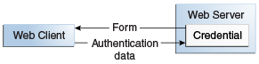
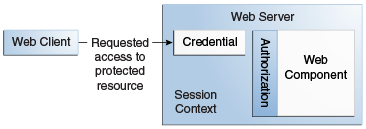
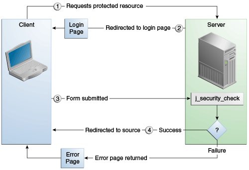
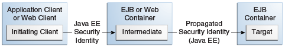
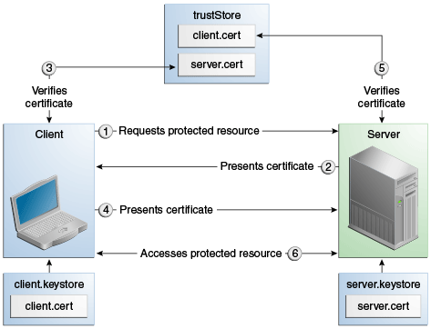
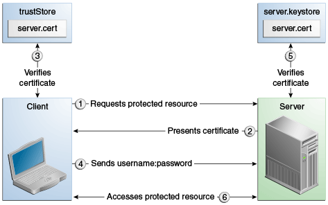

1. Introduction to Security in the Jakarta EE Platform
This chapter introduces basic security concepts and security mechanisms. More information on these concepts and mechanisms can be found in the chapter on security in the Jakarta EE 8 specification.
Note: The SDK may include additional material demonstrating key features of Jakarta Security. Please check the latest SDK release notes for additional details. |
1.1. Overview of Jakarta Security
Every enterprise that has either sensitive resources that can be accessed by many users or resources that traverse unprotected, open networks, such as the Internet, needs to be protected.
Enterprise tier and web tier applications are made up of components that are deployed into various containers. These components are combined to build a multitier enterprise application. Security for components is provided by their containers. A container provides two kinds of security: declarative and programmatic.
-
Declarative security expresses an application component’s security requirements by using either deployment descriptors or annotations.
A deployment descriptor is an XML file that is external to the application and that expresses an application’s security structure, including security roles, access control, and authentication requirements. For more information about deployment descriptors, read Using Deployment Descriptors for Declarative Security.
Annotations, also called metadata, are used to specify information about security within a class file. When the application is deployed, this information can be either used by or overridden by the application deployment descriptor. Annotations save you from having to write declarative information inside XML descriptors. Instead, you simply put annotations on the code, and the required information gets generated. For this tutorial, annotations are used for securing applications wherever possible. For more information about annotations, see Using Annotations to Specify Security Information.
-
Programmatic security is embedded in an application and is used to make security decisions. Programmatic security is useful when declarative security alone is not sufficient to express the security model of an application. For more information about programmatic security, read Using Programmatic Security.
Jakarta EE 8 includes a Security API specification that defines portable, plug-in interfaces for authentication and identity stores, and a new injectable-type SecurityContext interface that provides an access point for programmatic security. You can use the built-in implementations of these APIs, or define custom implementations.
More information on these concepts and mechanismsMore information on these concepts and mechanisms can be found in the chapter on security in the Jakarta EE 8 specification.
Other chapters in this Part discuss security requirements in web tier and enterprise tier applications, and the Jakarta Security.
-
Chapter 51, "Getting Started Securing Web Applications" explains how to add security to web components, such as servlets.
-
Chapter 52, "Getting Started Securing Enterprise Applications" explains how to add security to Jakarta EE components, such as enterprise beans and application clients.
-
53 Using Jakarta Security describes the authentication and credential validation funtionality provided by Jakarta Security, and provides examples.
1.1.1. A Simple Application Security Walkthrough
The security behavior of a Jakarta EE environment may be better understood by examining what happens in a simple application with a web client, a user interface, and enterprise bean business logic.
In the following example, which is taken from the Jakarta EE Specification, the web client relies on the web server to act as its authentication proxy by collecting user authentication data from the client and using it to establish an authenticated session.
Step 1: Initial Request
In the first step of this example, the web client requests the main application URL. This action is shown in Figure 50-1.

Since the client has not yet authenticated itself to the application environment, the server responsible for delivering the web portion of the application, hereafter referred to as the web server, detects this and invokes the appropriate authentication mechanism for this resource. For more information on these mechanisms, see Security Mechanisms.
Step 2: Initial Authentication
The web server returns a form that the web client uses to collect authentication data, such as user name and password, from the user. The web client forwards the authentication data to the web server, where it is validated by the web server, as shown in Figure 50-2. The validation mechanism may be local to a server or may leverage the underlying security services. On the basis of the validation, the web server sets a credential for the user.

Step 3: URL Authorization
The credential is used for future determinations of whether the user is authorized to access restricted resources it may request. The web server consults the security policy associated with the web resource to determine the security roles that are permitted access to the resource. The security policy is derived from annotations or from the deployment descriptor. The web container then tests the user’s credential against each role to determine whether it can map the user to the role. Figure 50-3 shows this process.

The web server’s evaluation stops with an "is authorized" outcome when the web server is able to map the user to a role. A "not authorized" outcome is reached if the web server is unable to map the user to any of the permitted roles.
Step 4: Fulfilling the Original Request
If the user is authorized, the web server returns the result of the original URL request, as shown in Figure 50-4.
In our example, the response URL of a web page is returned, enabling the user to post form data that needs to be handled by the business-logic component of the application. See Chapter 51, "Getting Started Securing Web Applications" for more information on protecting web applications.
Step 5: Invoking Enterprise Bean Business Methods
The web page performs the remote method call to the enterprise bean, using the user’s credential to establish a secure association between the web page and the enterprise bean, as shown in Figure 50-5. The association is implemented as two related security contexts: one in the web server and one in the enterprise bean container.

The enterprise container is responsible for enforcing access control on the enterprise bean method. The container consults the security policy associated with the enterprise bean to determine the security roles that are permitted access to the method. The security policy is derived from annotations or from the deployment descriptor. For each role, the enterprise bean container determines whether it can map the caller to the role by using the security context associated with the call.
The container’s evaluation stops with an "is authorized" outcome when the container is able to map the caller’s credential to a role. A "not authorized" outcome is reached if the container is unable to map the caller to any of the permitted roles. A "not authorized" result causes an exception to be thrown by the container and propagated back to the calling web page.
If the call is authorized, the container dispatches control to the enterprise bean method. The result of the bean’s execution of the call is returned to the web page and ultimately to the user by the web server and the web client.
1.1.2. Features of a Security Mechanism
A properly implemented security mechanism will provide the following functionality:
-
Prevent unauthorized access to application functions and business or personal data (authentication)
-
Hold system users accountable for operations they perform (non-repudiation)
-
Protect a system from service interruptions and other breaches that affect quality of service
Ideally, properly implemented security mechanisms will also be
-
Easy to administer
-
Transparent to system users
-
Interoperable across application and enterprise boundaries
1.1.3. Characteristics of Application Security
Jakarta EE applications consist of components that can contain both protected and unprotected resources. Often, you need to protect resources to ensure that only authorized users have access. Authorization provides controlled access to protected resources. Authorization is based on identification and authentication. Identification is a process that enables recognition of an entity by a system, and authentication is a process that verifies the identity of a user, device, or other entity in a computer system, usually as a prerequisite to allowing access to resources in a system.
Authorization and authentication are not required for an entity to access unprotected resources. Accessing a resource without authentication is referred to as unauthenticated, or anonymous, access.
The characteristics of application security that, when properly addressed, help to minimize the security threats faced by an enterprise include the following.
-
Authentication: The means by which communicating entities, such as client and server, prove to each other that they are acting on behalf of specific identities that are authorized for access. This ensures that users are who they say they are.
-
Authorization, or access control: The means by which interactions with resources are limited to collections of users or programs for the purpose of enforcing integrity, confidentiality, or availability constraints. This ensures that users have permission to perform operations or access data.
-
Data integrity: The means used to prove that information has not been modified by a third party, an entity other than the source of the information. For example, a recipient of data sent over an open network must be able to detect and discard messages that were modified after they were sent. This ensures that only authorized users can modify data.
-
Confidentiality, or data privacy: The means used to ensure that information is made available only to users who are authorized to access it. This ensures that only authorized users can view sensitive data.
-
Non-repudiation: The means used to prove that a user who performed some action cannot reasonably deny having done so. This ensures that transactions can be proved to have happened.
-
Quality of Service: The means used to provide better service to selected network traffic over various technologies.
-
Auditing: The means used to capture a tamper-resistant record of security-related events for the purpose of being able to evaluate the effectiveness of security policies and mechanisms. To enable this, the system maintains a record of transactions and security information.
1.2. Security Mechanisms
The characteristics of an application should be considered when deciding the layer and type of security to be provided for applications. The following sections discuss the characteristics of the common mechanisms that can be used to secure Jakarta EE applications. Each of these mechanisms can be used individually or with others to provide protection layers based on the specific needs of your implementation.
The following topics are addressed here:
1.2.1. Java SE Security Mechanisms
Java SE provides support for a variety of security features and mechanisms.
-
Java Authentication and Authorization Service (JAAS) is a set of APIs that enable services to authenticate and enforce access controls upon users. JAAS provides a pluggable and extensible framework for programmatic user authentication and authorization. JAAS is a core Java SE API and is an underlying technology for Jakarta EE security mechanisms.
-
Java Generic Security Services (Java GSS-API) is a token-based API used to securely exchange messages between communicating applications. The GSS-API offers application programmers uniform access to security services atop a variety of underlying security mechanisms, including Kerberos.
-
Java Cryptography Extension (JCE) provides a framework and implementations for encryption, key generation and key agreement, and Message Authentication Code (MAC) algorithms. Support for encryption includes symmetric, asymmetric, block, and stream ciphers. Block ciphers operate on groups of bytes; stream ciphers operate on one byte at a time. The software also supports secure streams and sealed objects.
-
Java Secure Sockets Extension (JSSE) provides a framework and an implementation for a Java version of the Secure Sockets Layer (SSL) and Transport Layer Security (TLS) protocols and includes functionality for data encryption, server authentication, message integrity, and optional client authentication to enable secure Internet communications.
-
Simple Authentication and Security Layer (SASL) is an Internet standard (RFC 2222) that specifies a protocol for authentication and optional establishment of a security layer between client and server applications. SASL defines how authentication data is to be exchanged but does not itself specify the contents of that data. SASL is a framework into which specific authentication mechanisms that specify the contents and semantics of the authentication data can fit.
Java SE also provides a set of tools for managing keystores, certificates, and policy files; generating and verifying JAR signatures; and obtaining, listing, and managing Kerberos tickets.
For more information on Java SE security, visit
http://docs.oracle.com/javase/8/docs/technotes/guides/security/.
1.2.2. Jakarta EE Security Mechanisms
Jakarta EE security services are provided by the component container and can be implemented by using declarative or programmatic techniques (see Securing Containers). Jakarta EE security services provide a robust and easily configured security mechanism for authenticating users and authorizing access to application functions and associated data at many different layers. Jakarta EE security services are separate from the security mechanisms of the operating system.
Application-Layer Security
In Jakarta EE, component containers are responsible for providing application-layer security, security services for a specific application type tailored to the needs of the application. At the application layer, application firewalls can be used to enhance application protection by protecting the communication stream and all associated application resources from attacks.
Jakarta Security is easy to implement and configure and can offer fine-grained access control to application functions and data. However, as is inherent to security applied at the application layer, security properties are not transferable to applications running in other environments and protect data only while it is residing in the application environment. In the context of a traditional enterprise application, this is not necessarily a problem, but when applied to a web services application, in which data often travels across several intermediaries, you would need to use the Jakarta EE security mechanisms along with transport-layer security and message-layer security for a complete security solution.
The advantages of using application-layer security include the following.
-
Security is uniquely suited to the needs of the application.
-
Security is fine grained, with application-specific settings.
The disadvantages of using application-layer security include the following.
-
The application is dependent on security attributes that are not transferable between application types.
-
Support for multiple protocols makes this type of security vulnerable.
-
Data is close to or contained within the point of vulnerability.
For more information on providing security at the application layer, see Securing Containers.
Transport-Layer Security
Transport-layer security is provided by the transport mechanisms used to transmit information over the wire between clients and providers; thus, transport-layer security relies on secure HTTP transport (HTTPS) using Secure Sockets Layer (SSL). Transport security is a point-to-point security mechanism that can be used for authentication, message integrity, and confidentiality. When running over an SSL-protected session, the server and client can authenticate each other and negotiate an encryption algorithm and cryptographic keys before the application protocol transmits or receives its first byte of data. Security is active from the time the data leaves the client until it arrives at its destination, or vice versa, even across intermediaries. The problem is that the data is not protected once it gets to the destination. One solution is to encrypt the message before sending.
Transport-layer security is performed in a series of phases, as follows.
-
The client and server agree on an appropriate algorithm.
-
A key is exchanged using public-key encryption and certificate-based authentication.
-
A symmetric cipher is used during the information exchange.
Digital certificates are necessary when running HTTPS using SSL. The HTTPS service of most web servers will not run unless a digital certificate has been installed. Digital certificates have already been created for GlassFish Server.
The advantages of using transport-layer security include the following.
-
It is relatively simple, well-understood, standard technology.
-
It applies to both a message body and its attachments.
The disadvantages of using transport-layer security include the following.
-
It is tightly coupled with the transport-layer protocol.
-
It represents an all-or-nothing approach to security. This implies that the security mechanism is unaware of message contents, so that you cannot selectively apply security to portions of the message as you can with message-layer security.
-
Protection is transient. The message is protected only while in transit. Protection is removed automatically by the endpoint when it receives the message.
-
It is not an end-to-end solution, simply point-to-point.
For more information on transport-layer security, see Establishing a Secure Connection Using SSL.
Message-Layer Security
In message-layer security, security information is contained within the SOAP message and/or SOAP message attachment, which allows security information to travel along with the message or attachment. For example, a portion of the message may be signed by a sender and encrypted for a particular receiver. When sent from the initial sender, the message may pass through intermediate nodes before reaching its intended receiver. In this scenario, the encrypted portions continue to be opaque to any intermediate nodes and can be decrypted only by the intended receiver. For this reason, message-layer security is also sometimes referred to as end-to-end security.
The advantages of message-layer security include the following.
-
Security stays with the message over all hops and after the message arrives at its destination.
-
Security can be selectively applied to different portions of a message and, if using XML Web Services Security, to attachments.
-
Message security can be used with intermediaries over multiple hops.
-
Message security is independent of the application environment or transport protocol.
The disadvantage of using message-layer security is that it is relatively complex and adds some overhead to processing.
GlassFish Server supports message security using Metro, a web services
stack that uses Web Services Security (WSS) to secure messages. Because
this message security is specific to Metro and is not a part of the Jakarta
EE platform, this tutorial does not discuss using WSS to secure
messages. See the Metro User’s Guide at https://javaee.github.io/metro/.
1.3. Using Pluggable Providers
Jakarta EE includes two specifications that define SPI interfaces for pluggable security providers, JSR-196 and JSR-375. These specifications are described in more detail in the following sections:
1.3.1. JSR-196 Java Authentication Service Provider Interface for Containers (JASPIC)
JSR-196 defines a model for securing messages sent between a client and server in
which the sender of a message "secures" it, and the receiver "validates" it.
The details of how messages are secured and validated are undefined by the model;
support for securing and validating particular types of messages is provided by
"auth modules" — implementations of the JASPIC ClientAuthModule and
ServerAuthModule interfaces — that support particular protocols or message types,
and that plug in to the JASPIC framework. (Note that it is not necessary for a
client and server to both use JASPIC, as long as both sides process messages
correctly for a given protocol.)
JASPIC defines two "profiles" for integrating JASPIC auth modules into Jakarta EE containers: the Servlet Container Profile, and the SOAP Profile. Each specifies how JASPIC message processing must be integrated into the request processing flow of the container in question to validate incoming requests and secure outgoing responses.
In the case of the Servlet Container Profile, if a ServerAuthModule is configured/available
for a given application context, then the modules’s validateRequest() method must be
invoked (and succeed) before authorizing access and calling the target servlet,
and the module’s secureResponse() method must be called before returning a response.
Typically, a ServerAuthModule written for the Servlet Container Profile looks for
user credentials or tokens in an incoming request, and then uses them to authenticate the caller and establish
the caller’s identity. A ServerAuthModule may also engage in a challenge/response
protocol with the client, or negotiate with a third party to establish/verify the
client’s identity.
As with the Servlet Container Profile, the SOAP Profile requires that
validateRequest() be called and succeed before proceeding to authorize access and
perform any further processing of an incoming message, and that secureResponse()
is called for the response before it is sent. In contrast to the Servlet
Container Profile, validateRequest() processing for SOAP messages typically involves
verifying signatures on signed elements, decrypting encrypted elements, and/or
establishing the identity of a SOAP actor based on a token included in the message,
while secureResponse() typically involves signing and/or encrypting elements
of the outbound message.
JASPIC does not define any standard or built-in ServerAuthModules; they must be
provided either by the application using the module, or as a non-standard
extension of a particular vendor’s Jakarta EE product. ServerAuthModules can
sometimes be directly configured for an application in a vendor-specific way, but
the standard mechanism for making a ServerAuthModule available to an application
is to register a corresponding AuthConfigProvider with the global AuthConfigFactory.
An AuthConfigProvider makes a ServerAuthModule available to the container, via a
series of intermediary objects, for runtime message processing.
1.3.2. JSR-375 Jakarta EE Security API
JSR-375 defines the following authentication-related plugin SPIs:
-
HttpAuthenticationMechanism- An interface for modules that authenticate callers to a web application. It defines three methods that correspond to the methods of a JASPICServerAuthModule, albeit with slightly different signatures. AnHttpAuthenticationMechanismprovides similar functionality to aServerAuthModule, and the Servlet Container uses a specialServerAuthModuleto invoke the HttpAuthenticationMechanism’s methods, but HttpAuthenticationMechanisms are simpler to write, and to deploy, than are ServerAuthModules. -
IdentityStore- This interface defines methods for validating a caller’s credentials (such as username and password) and returning group membership information. IdentityStores are invoked under the control of anIdentityStoreHandler, which, if multiple IdentityStores are present, calls the available IdentityStores in a specific order and aggregates the results. -
RememberMeIdentityStore- This interface is a variation on theIdentityStoreinterface, intended specifically to address cases where an authenticated user’s identity should be remembered for an extended period of time, so that the caller can return to the application periodically without needing to present primary authentication credentials each time.
Implementations of these SPI interfaces are CDI beans, and, as such, applications
can provide implementations that support application-specific authentication
mechanisms, or validate user credentials against application-specific identity stores,
simply by including them in a bean archive that is part of the deployed application.
There are also several standard, built-in implementations of HttpAuthenticationMechanism
and IdentityStore that provide configurable support for common authentication and
credential validation use cases, without the need to write custom implementations.
Because these SPIs, related annotations, and the CDI deployment mechanism are all part of standard Jakarta EE, implementations are completely portable (to the extent they do not rely internally on platform-specific APIs or libraries) and can be portably deployed to any Jakarta EE server.
1.4. Securing Containers
In Jakarta EE, the component containers are responsible for providing application security. A container provides two types of security: declarative and programmatic.
The following topics are addressed here:
1.4.1. Using Annotations to Specify Security Information
Annotations enable a declarative style of programming and so encompass both the declarative and programmatic security concepts. Users can specify information about security within a class file by using annotations. GlassFish Server uses this information when the application is deployed. Not all security information can be specified by using annotations, however. Some information must be specified in the application deployment descriptors.
Specific annotations that can be used to specify security information within an enterprise bean class file are described in Securing an Enterprise Bean Using Declarative Security. Chapter 51, "Getting Started Securing Web Applications", describes how to use annotations to secure web applications where possible. Deployment descriptors are described only where necessary.
For more information on annotations, see Further Information about Security.
1.4.2. Using Deployment Descriptors for Declarative Security
Declarative security can express an application component’s security requirements by using deployment descriptors. Because deployment descriptor information is declarative, it can be changed without the need to modify the source code. At runtime, the Jakarta EE server reads the deployment descriptor and acts upon the corresponding application, module, or component accordingly. Deployment descriptors must provide certain structural information for each component if this information has not been provided in annotations or is not to be defaulted.
This part of the tutorial does not document how to create deployment descriptors; it describes only the elements of the deployment descriptor relevant to security. NetBeans IDE provides tools for creating and modifying deployment descriptors.
Different types of components use different formats, or schemas, for their deployment descriptors. The security elements of deployment descriptors discussed in this tutorial include the following.
-
Web components may use a web application deployment descriptor named
web.xml.The schema for web component deployment descriptors is provided in Chapter 14 of the Jakarta Servlet 4.0 specification, which can be downloaded from
https://jakarta.ee/specifications/servlet/4.0/. -
Jakarta Enterprise Beans components may use an enterprise bean deployment descriptor named
META-INF/ejb-jar.xml, contained in the enterprise bean JAR file.The schema for enterprise bean deployment descriptors is provided in Chapter 14 of the Jakarta Enterprise Beans 3.2 Core Contracts and Requirements Specification, which can be downloaded from
https://jakarta.ee/specifications/enterprise-beans/3.2/.
1.4.3. Using Programmatic Security
Programmatic security is embedded in an application and is used to make
security decisions. Programmatic security is useful when declarative
security alone is not sufficient to express the security model of an
application. The API for programmatic security consists of methods of the Jakarta
Security SecurityContext interface, and methods of the enterprise bean EJBContext
interface and the servlet HttpServletRequest interface. These
methods allow components to make business-logic decisions based on the
security role of the caller or remote user.
Programmatic security is discussed in more detail in the following sections:
1.5. Securing GlassFish Server
This tutorial describes deployment to GlassFish Server, which provides highly secure, interoperable, and distributed component computing based on the Jakarta EE security model. GlassFish Server supports the Jakarta EE 8 security model. You can configure GlassFish Server for the following purposes.
-
Adding, deleting, or modifying authorized users. For more information on this topic, see Working with Realms, Users, Groups, and Roles.
-
Configuring secure HTTP and Internet Inter-Orb Protocol (IIOP) listeners.
-
Configuring secure Java Management Extensions (JMX) connectors.
-
Adding, deleting, or modifying existing or custom realms.
-
Defining an interface for pluggable authorization providers using Java Authorization Contract for Containers (JACC). JACC defines security contracts between GlassFish Server and authorization policy modules. These contracts specify how the authorization providers are installed, configured, and used in access decisions.
-
Using pluggable audit modules.
-
Customizing authentication mechanisms. All implementations of Jakarta EE 8 compatible web containers are required to support the Servlet Profile of Jakarta Authentication, which offers an avenue for customizing the authentication mechanism applied by the web container on behalf of one or more applications.
-
Setting and changing policy permissions for an application.
1.6. Working with Identity Stores
An identity store is a database or directory (store) that contains identity information about a collection of users that includes an application’s callers. An identity store holds callers names, group membership information, and information sufficient to allow it to validate a caller’s credentials. An identity store may also contain other information, such as globally unique caller identifiers or other caller attributes.
As specified in the Jakarta EE Security API, the IdentityStore interface
provides an abstraction of an identity store. Implementations of the IdentityStore
interface interact with identity stores to authenticate users
and to retrieve caller group information. Most often, an implementation of the IdentityStore
interface interacts with an external identity store, such as an LDAP server,
but it can also manage user account data itself.
The IdentityStore interface is intended
primarily for use by the HttpAuthenticationMechanism (also specified in the
Jakarta EE Security API), but can be used by other implementations such as a JASPIC
ServerAuthModule or a container’s built-in authentication mechanisms. Using the
HttpAuthenticationMechanism
and IdentityStore implementations, both built-in and custom, provides a significant
advantage over the BASIC and FORM mechanisms
defined by Servlet 4.0 (and previous versions) and configured declaratively
using <login-config> in web.xml,
because it allows an application to control the identity stores it will
authenticate against in a standard, portable way.
An application can provide its own IdentityStore,
or use the built in LDAP or Database identity store implementations of the interface.
For details about the IdentityStore interfaces and examples of their usage, see
Overview of the Identity Store Interfaces.
1.7. Working with Realms, Users, Groups, and Roles
You often need to protect resources to ensure that only authorized users have access. See Characteristics of Application Security for an introduction to the concepts of authentication, identification, and authorization.
This section discusses setting up users so that they can be correctly identified and either given access to protected resources or denied access if they are not authorized to access the protected resources. To authenticate a user, you need to follow these basic steps.
-
The application developer writes code to prompt for a user name and password. The various methods of authentication are discussed in Specifying Authentication Mechanisms.
-
The application developer communicates how to set up security for the deployed application by use of a metadata annotation or deployment descriptor. This step is discussed in Setting Up Security Roles.
-
The server administrator sets up authorized users and groups in GlassFish Server. This is discussed in Managing Users and Groups in GlassFish Server.
-
The application deployer maps the application’s security roles to users, groups, and principals defined in GlassFish Server. This topic is discussed in Mapping Roles to Users and Groups.
Note: By default, group principal names are mapped to roles of the same name. |
1.7.1. What Are Realms, Users, Groups, and Roles?
A realm is a security policy domain defined for a web or application server. A realm contains a collection of users, who may or may not be assigned to a group. Managing users in GlassFish Server is discussed in Managing Users and Groups in GlassFish Server.
An application will often prompt for a user name and password before allowing access to a protected resource. After the user name and password have been entered, that information is passed to the server, which either authenticates the user and sends the protected resource or does not authenticate the user, in which case access to the protected resource is denied. This type of user authentication is discussed in Specifying an Authentication Mechanism in the Deployment Descriptor.
In some applications, authorized users are assigned to roles. In this situation, the role assigned to the user in the application must be mapped to a principal or group defined on the application server. Figure 50-6 shows this. More information on mapping roles to users and groups can be found in Setting Up Security Roles.
The following sections provide more information on realms, users, groups, and roles.
What Is a Realm?
The protected resources on a server can be partitioned into a set of protection spaces, each with its own authentication scheme and/or authorization database containing a collection of users and groups. A realm is a complete database of users and groups identified as valid users of one or more applications and controlled by the same authentication policy.
The Jakarta EE server authentication service can govern users in multiple
realms. The file, admin-realm, and certificate realms come
preconfigured for GlassFish Server.
In the file realm, the server stores user credentials locally in a
file named keyfile. You can use the Administration Console to manage
users in the file realm. When using the file realm, the server
authentication service verifies user identity by checking the file
realm. This realm is used for the authentication of all clients except
for web browser clients that use HTTPS and certificates.
In the certificate realm, the server stores user credentials in a
certificate database. When using the certificate realm, the server
uses certificates with HTTPS to authenticate web clients. To verify the
identity of a user in the certificate realm, the authentication
service verifies an X.509 certificate. For step-by-step instructions for
creating this type of certificate, see
Working with Digital Certificates.
The common name field of the X.509 certificate is used as the principal
name.
The admin-realm is also a file realm and stores administrator user
credentials locally in a file named admin-keyfile. You can use the
Administration Console to manage users in this realm in the same way you
manage users in the file realm. For more information, see
Managing Users and Groups in GlassFish Server.
What Is a User?
A user is an individual or application program identity that has been defined in GlassFish Server. In a web application, a user can have associated with that identity a set of roles that entitle the user to access all resources protected by those roles. Users can be associated with a group.
A Jakarta EE user is similar to an operating system user. Typically, both types of users represent people. However, these two types of users are not the same. The Jakarta EE server authentication service has no knowledge of the user name and password you provide when you log in to the operating system. The Jakarta EE server authentication service is not connected to the security mechanism of the operating system. The two security services manage users that belong to different realms.
What Is a Group?
A group is a set of authenticated users, classified by common traits,
defined in GlassFish Server. A Jakarta EE user of the file realm can
belong to a group in GlassFish Server. (A user in the certificate
realm cannot.) A group in GlassFish Server is a category of users
classified by common traits, such as job title or customer profile. For
example, most customers of an e-commerce application might belong to the
CUSTOMER group, but the big spenders would belong to the PREFERRED
group. Categorizing users into groups makes it easier to control the
access of large numbers of users.
A group in GlassFish Server has a different scope from a role. A group is designated for the entire GlassFish Server, whereas a role is associated only with a specific application in GlassFish Server.
What Is a Role?
A role is an abstract name for the permission to access a particular set of resources in an application. A role can be compared to a key that can open a lock. Many people might have a copy of the key. The lock doesn’t care who you are, only that you have the right key.
Some Other Terminology
The following terminology is also used to describe the security requirements of the Jakarta EE platform.
-
A principal is an entity that can be authenticated by an authentication protocol in a security service that is deployed in an enterprise. A principal is identified by using a principal name and authenticated by using authentication data.
-
A security policy domain, also known as a security domain or realm, is a scope over which a common security policy is defined and enforced by the security administrator of the security service.
-
Security attributes are a set of attributes associated with every principal. The security attributes have many uses: for example, access to protected resources and auditing of users. Security attributes can be associated with a principal by an authentication protocol.
-
A credential is an object that contains or references security attributes used to authenticate a principal for Jakarta EE services. A principal acquires a credential upon authentication or from another principal that allows its credential to be used.
1.7.2. Managing Users and Groups in GlassFish Server
Follow these steps for managing users before you run the tutorial examples.
The following topics are addressed here:
To Add Users to GlassFish Server
-
Start GlassFish Server, if you haven’t already done so.
Information on starting GlassFish Server is available in Starting and Stopping GlassFish Server.
-
Start the Administration Console, if you haven’t already done so.
To start the Administration Console, open a web browser and specify the URL
http://localhost:4848/. If you changed the default Admin port during installation, enter the correct port number in place of4848. -
In the navigation tree, expand the Configurations node, then expand the server-config node.
-
Expand the Security node.
-
Expand the Realms node.
-
Select the realm to which you are adding users.
-
Select the
filerealm to add users you want to access applications running in this realm.For the example security applications, select the
filerealm. -
Select the
admin-realmto add users you want to enable as system administrators of GlassFish Server.You cannot add users to the
certificaterealm by using the Administration Console. In thecertificaterealm, you can add only certificates. For information on adding (importing) certificates to thecertificaterealm, see Adding Users to the Certificate Realm.
-
-
On the Edit Realm page, click Manage Users.
-
On the File Users or Admin Users page, click New to add a new user to the realm.
-
On the New File Realm User page, enter values in the User ID, Group List, New Password, and Confirm New Password fields.
For the Admin Realm, the Group List field is read-only, and the group name is
asadmin. Restart GlassFish Server and the Administration Console after you add a user to the Admin Realm.For more information on these properties, see Working with Realms, Users, Groups, and Roles.
For the example security applications, specify a user with any name and password you like, but make sure that the user is assigned to the group
TutorialUser. The user name and password are case-sensitive. Keep a record of the user name and password for working with the examples later in this tutorial. -
Click OK to add this user to the realm, or click Cancel to quit without saving.
1.7.3. Setting Up Security Roles
When you design an enterprise bean or web component, you should always
think about the kinds of users who will access the component. For
example, a web application for a human resources department might have a
different request URL for someone who has been assigned the role of
DEPT_ADMIN than for someone who has been assigned the role of
DIRECTOR. The DEPT_ADMIN role may let you view employee data, but
the DIRECTOR role enables you to modify employee data, including
salary data. Each of these security roles is an abstract logical
grouping of users that is defined by the person who assembles the
application. When an application is deployed, the deployer will map the
roles to security identities in the operational environment, as shown in
Figure 50-6.
For Jakarta EE components, you define security roles using the
@DeclareRoles and @RolesAllowed metadata annotations.
The following is an example of an application in which the role of
DEPT-ADMIN is authorized for methods that review employee payroll
data, and the role of DIRECTOR is authorized for methods that change
employee payroll data.
The enterprise bean would be annotated as shown in the following code:
import javax.annotation.security.DeclareRoles;
import javax.annotation.security.RolesAllowed;
...
@DeclareRoles({"DEPT-ADMIN", "DIRECTOR"})
@Stateless public class PayrollBean implements Payroll {
@Resource SessionContext ctx;
@RolesAllowed("DEPT-ADMIN")
public void reviewEmployeeInfo(EmplInfo info) {
oldInfo = ... read from database;
// ...
}
@RolesAllowed("DIRECTOR")
public void updateEmployeeInfo(EmplInfo info) {
newInfo = ... update database;
// ...
}
...
}For a servlet, you can use the @HttpConstraint annotation within the
@ServletSecurity annotation to specify the roles that are allowed to
access the servlet. For example, a servlet might be annotated as
follows:
@WebServlet(name = "PayrollServlet", urlPatterns = {"/payroll"})
@ServletSecurity(
@HttpConstraint(transportGuarantee = TransportGuarantee.CONFIDENTIAL,
rolesAllowed = {"DEPT-ADMIN", "DIRECTOR"}))
public class GreetingServlet extends HttpServlet {These annotations are discussed in more detail in Specifying Security for Basic Authentication Using Annotations and Securing an Enterprise Bean Using Declarative Security.
After users have provided their login information and the application has declared what roles are authorized to access protected parts of an application, the next step is to map the security role to the name of a user, or principal.
1.7.4. Mapping Roles to Users and Groups
When you are developing a Jakarta EE application, you don’t need to know what categories of users have been defined for the realm in which the application will be run. In the Jakarta EE platform, the security architecture provides a mechanism for mapping the roles defined in the application to the users or groups defined in the runtime realm.
The role names used in the application are often the same as the group names defined in GlassFish Server. Jakarta Security requires that group principal names are mapped to roles of the same name by default. Accordingly, the Default Principal To Role Mapping setting is enabled by default on the Security page of the GlassFish Server Administration Console. All the tutorial security examples use default principal-to-role mapping. With that setting enabled, if the group name defined on GlassFish Server matches the role name defined in the application, there is no need to use the runtime deployment descriptor to provide a mapping. The application server will implicitly make this mapping, as long as the names of the groups and roles match.
If the role names used in an application are not the same as the group
names defined on the server, use the runtime deployment descriptor to
specify the mapping. The following example demonstrates how to do this
mapping in the glassfish-web.xml file, which is the file used for web
applications:
<glassfish-web-app>
...
<security-role-mapping>
<role-name>Mascot</role-name>
<principal-name>Duke</principal-name>
</security-role-mapping>
<security-role-mapping>
<role-name>Admin</role-name>
<group-name>Director</group-name>
</security-role-mapping>
...
</glassfish-web-app>A role can be mapped to specific principals, specific groups, or both.
The principal or group names must be valid principals or groups in the
current default realm or in the realm specified in the login-config
element. In this example, the role of Mascot used in the application
is mapped to a principal, named Duke, that exists on the application
server. Mapping a role to a specific principal is useful when the person
occupying that role may change. For this application, you would need to
modify only the runtime deployment descriptor rather than search and
replace throughout the application for references to this principal.
Also in this example, the role of Admin is mapped to a group of users
assigned the group name of Director. This is useful because the group
of people authorized to access director-level administrative data has to
be maintained only in GlassFish Server. The application developer does
not need to know who these people are, but only needs to define the
group of people who will be given access to the information.
The role-name must match the role-name in the security-role
element of the corresponding deployment descriptor or the role name
defined in a @DeclareRoles annotation.
1.8. Establishing a Secure Connection Using SSL
Secure Sockets Layer (SSL) technology is security that is implemented at the transport layer (see Transport-Layer Security for more information about transport-layer security). SSL allows web browsers and web servers to communicate over a secure connection. In this secure connection, the data is encrypted before being sent and then is decrypted upon receipt and before processing. Both the browser and the server encrypt all traffic before sending any data.
SSL addresses the following important security considerations.
-
Authentication: During your initial attempt to communicate with a web server over a secure connection, that server will present your web browser with a set of credentials in the form of a server certificate (also called a public key certificate). The purpose of the certificate is to verify that the site is who and what it claims to be. In some cases, the server may request a certificate proving that the client is who and what it claims to be; this mechanism is known as client authentication.
-
Confidentiality: When data is being passed between the client and the server on a network, third parties can view and intercept this data. SSL responses are encrypted so that the data cannot be deciphered by the third party and the data remains confidential.
-
Integrity: When data is being passed between the client and the server on a network, third parties can view and intercept this data. SSL helps guarantee that the data will not be modified in transit by that third party.
The SSL protocol is designed to be as efficient as securely possible.
However, encryption and decryption are computationally expensive
processes from a performance standpoint. It is not strictly necessary to
run an entire web application over SSL, and it is customary for a
developer to decide which pages require a secure connection and which do
not. Pages that might require a secure connection include those for
login, personal information, shopping cart checkouts, or credit card
information transmittal. Any page within an application can be requested
over a secure socket by simply prefixing the address with https:
instead of http:. Any pages that absolutely require a secure
connection should check the protocol type associated with the page
request and take the appropriate action if https: is not specified.
Using name-based virtual hosts on a secured connection can be problematic. This is a design limitation of the SSL protocol itself. The SSL handshake, whereby the client browser accepts the server certificate, must occur before the HTTP request is accessed. As a result, the request information containing the virtual host name cannot be determined before authentication, and it is therefore not possible to assign multiple certificates to a single IP address. If all virtual hosts on a single IP address need to authenticate against the same certificate, the addition of multiple virtual hosts should not interfere with normal SSL operations on the server. Be aware, however, that most client browsers will compare the server’s domain name against the domain name listed in the certificate, if any; this is applicable primarily to official certificates signed by a certificate authority (CA). If the domain names do not match, these browsers will display a warning to the client. In general, only address-based virtual hosts are commonly used with SSL in a production environment.
1.8.1. Verifying and Configuring SSL Support
As a general rule, you must address the following issues to enable SSL for a server.
-
There must be a
Connectorelement for an SSL connector in the server deployment descriptor. -
There must be valid keystore and certificate files.
-
The location of the keystore file and its password must be specified in the server deployment descriptor.
An SSL HTTPS connector is already enabled in GlassFish Server.
For testing purposes and to verify that SSL support has been correctly installed, load the default introduction page with a URL that connects to the port defined in the server deployment descriptor:
https://localhost:8181/The https in this URL indicates that the browser should be using the
SSL protocol. The localhost in this example assumes that you are
running the example on your local machine as part of the development
process. The 8181 in this example is the secure port that was
specified where the SSL connector was created. If you are using a
different server or port, modify this value accordingly.
The first time that you load this application, the New Site Certificate or Security Alert dialog box appears. Click Next to move through the series of dialog boxes, and click Finish when you reach the last dialog box. The certificates will appear only the first time. When you accept the certificates, subsequent hits to this site assume that you still trust the content.
1.9. Further Information about Security
For more information about security in Jakarta EE applications, see
-
Jakarta EE 8 specification:
``https://jakarta.ee/specifications/platform/8/
-
Jakarta Security 1.0:
-
Jakarta Authentication 1.1:
-
Jakarta Enterprise Beans 3.2 specification:
-
Jakarta Enterprise Web Services 1.4 specification:
-
Java SE security information:
-
Jakarta Servlet 4.0 specification:
-
Jakarta Authorization 1.5 specification:
2. Getting Started Securing Web Applications
This chapter describes in greater detail the ways to implement security for Jakarta EE web applications discussed in a general way in Securing Containers. The detail and examples in this chapter explore these security services as they relate to web components.
2.1. Overview of Web Application Security
A web application is accessed using a web browser over a network, such as the Internet or a company’s intranet. As discussed in Distributed Multitiered Applications, the Jakarta EE platform uses a distributed multitiered application model, and web applications run in the web tier.
Web applications contain resources that can be accessed by many users. These resources often traverse unprotected, open networks, such as the Internet. In such an environment, a substantial number of web applications will require some type of security.
Securing applications and their clients in the business tier and the EIS tier is discussed in Chapter 52, "Getting Started Securing Enterprise Applications".
In the Jakarta EE platform, web components provide the dynamic extension capabilities for a web server. Web components can be Jakarta servlets or Jakarta Server Faces pages.
Certain aspects of web application security can be configured when the application is installed, or deployed, to the web container. Annotations and/or deployment descriptors are used to relay information to the deployer about security and other aspects of the application. Specifying this information in annotations or in the deployment descriptor helps the deployer set up the appropriate security policy for the web application. Any values explicitly specified in the deployment descriptor override any values specified in annotations.
Security for Jakarta EE web applications can be implemented in the following ways.
-
Declarative security can be implemented using either metadata annotations or an application’s deployment descriptor. See Overview of Jakarta Security for more information.
Declarative security for web applications is described in Securing Web Applications.
-
Programmatic security is embedded in an application and can be used to make security decisions when declarative security alone is not sufficient to express the security model of an application. Declarative security alone may not be sufficient when conditional login in a particular work flow, instead of for all cases, is required in the middle of an application. See Overview of Jakarta Security for more information.
Servlet 4.0 provides the
authenticate,login, andlogoutmethods of theHttpServletRequestinterface. With the addition of theauthenticate,login, andlogoutmethods to the Servlet specification, an application deployment descriptor is no longer required for web applications but may still be used to further specify security requirements beyond the basic default values.Programmatic security is discussed in Using Programmatic Security with Web Applications.
-
Message security works with web services and incorporates security features, such as digital signatures and encryption, into the header of a SOAP message, working in the application layer, ensuring end-to-end security. Message security is not a component of Jakarta EE and is mentioned here for informational purposes only.
Some of the material in this chapter builds on material presented earlier in this tutorial. In particular, this chapter assumes that you are familiar with the information in the following chapters:
2.2. Securing Web Applications
Web applications are created by application developers who give, sell, or otherwise transfer the application to an application deployer for installation into a runtime environment.
The following topics are addressed here:
2.2.1. Overview of Securing Web Applications
Application developers communicate how to set up security for the deployed application by using annotations or deployment descriptors. This information is passed on to the deployer, who uses it to define method permissions for security roles, set up user authentication, and set up the appropriate transport mechanism. If the application developer doesn’t define security requirements, the deployer will have to determine the security requirements independently.
Some elements necessary for security in a web application cannot be specified as annotations for all types of web applications. This chapter explains how to secure web applications using annotations wherever possible. It explains how to use deployment descriptors where annotations cannot be used.
2.2.2. Specifying Security Constraints
A security constraint is used to define the access privileges to a collection of resources using their URL mapping.
If your web application uses a servlet, you can express the security
constraint information by using annotations. Specifically, you use the
@HttpConstraint and, optionally, the @HttpMethodConstraint
annotations within the @ServletSecurity annotation to specify a
security constraint.
If your web application does not use a servlet, however, you must
specify a security-constraint element in the deployment descriptor
file. The authentication mechanism cannot be expressed using
annotations, so if you use any authentication method other than BASIC
(the default), a deployment descriptor is required.
The following subelements can be part of a security-constraint.
-
Web resource collection (
web-resource-collection): A list of URL patterns (the part of a URL after the host name and port you want to constrain) and HTTP operations (the methods within the files that match the URL pattern you want to constrain) that describe a set of resources to be protected. Web resource collections are discussed in Specifying a Web Resource Collection. -
Authorization constraint (
auth-constraint): Specifies whether authentication is to be used and names the roles authorized to perform the constrained requests. For more information about authorization constraints, see Specifying an Authorization Constraint. -
User data constraint (
user-data-constraint): Specifies how data is protected when transported between a client and a server. User data constraints are discussed in Specifying a Secure Connection.
Specifying a Web Resource Collection
A web resource collection consists of the following subelements.
-
web-resource-nameis the name you use for this resource. Its use is optional. -
url-patternis used to list the request URI to be protected. Many applications have both unprotected and protected resources. To provide unrestricted access to a resource, do not configure a security constraint for that particular request URI.The request URI is the part of a URL after the host name and port. For example, let’s say that you have an e-commerce site with a catalog that you would want anyone to be able to access and browse, and a shopping cart area for customers only. You could set up the paths for your web application so that the pattern
/cart/*is protected but nothing else is protected. Assuming that the application is installed at context path/myapp, the following are true.-
http://localhost:8080/myapp/index.xhtmlis not protected. -
http://localhost:8080/myapp/cart/index.xhtmlis protected.A user will be prompted to log in the first time he or she accesses a resource in the
cart/subdirectory.
-
-
http-methodorhttp-method-omissionis used to specify which methods should be protected or which methods should be omitted from protection. An HTTP method is protected by aweb-resource-collectionunder any of the following circumstances:-
If no HTTP methods are named in the collection (which means that all are protected)
-
If the collection specifically names the HTTP method in an
http-methodsubelement -
If the collection contains one or more
http-method-omissionelements, none of which names the HTTP method
-
Specifying an Authorization Constraint
An authorization constraint (auth-constraint) contains the role-name
element. You can use as many role-name elements as needed here.
An authorization constraint establishes a requirement for authentication
and names the roles authorized to access the URL patterns and HTTP
methods declared by this security constraint. If there is no
authorization constraint, the container must accept the request without
requiring user authentication. If there is an authorization constraint
but no roles are specified within it, the container will not allow
access to constrained requests under any circumstances. Each role name
specified here must either correspond to the role name of one of the
security-role elements defined for this web application or be the
specially reserved role name *, which indicates all roles in the web
application. Role names are case sensitive. The roles defined for the
application must be mapped to users and groups defined on the server,
except when default principal-to-role mapping is used.
For more information about security roles, see Declaring Security Roles. For information on mapping security roles, see Mapping Roles to Users and Groups.
For a servlet, the @HttpConstraint and @HttpMethodConstraint
annotations accept a rolesAllowed element that specifies the
authorized roles.
Specifying a Secure Connection
A user data constraint (user-data-constraint in the deployment
descriptor) contains the transport-guarantee subelement. A user data
constraint can be used to require that a protected transport-layer
connection, such as HTTPS, be used for all constrained URL patterns and
HTTP methods specified in the security constraint. The choices for
transport guarantee are CONFIDENTIAL, INTEGRAL, or NONE. If you
specify CONFIDENTIAL or INTEGRAL as a security constraint, it
generally means that the use of SSL is required and applies to all
requests that match the URL patterns in the web resource collection, not
just to the login dialog box.
The strength of the required protection is defined by the value of the transport guarantee, as follows.
-
Specify
CONFIDENTIALwhen the application requires that data be transmitted so as to prevent other entities from observing the contents of the transmission. -
Specify
INTEGRALwhen the application requires that the data be sent between client and server in such a way that it cannot be changed in transit. -
Specify
NONEto indicate that the container must accept the constrained requests on any connection, including an unprotected one.
Note: In practice, Jakarta EE servers treat the |
The user data constraint is handy to use in conjunction with basic and
form-based user authentication. When the login authentication method is
set to BASIC or FORM, passwords are not protected, meaning that
passwords sent between a client and a server on an unprotected session
can be viewed and intercepted by third parties. Using a user data
constraint with the user authentication mechanism can alleviate this
concern. Configuring a user authentication mechanism is described in
Specifying an Authentication Mechanism in the Deployment
Descriptor.
To guarantee that data is transported over a secure connection, ensure that SSL support is configured for your server. SSL support is already configured for GlassFish Server.
Note: After you switch to SSL for a session, you should never accept any non-SSL requests for the rest of that session. For example, a shopping site might not use SSL until the checkout page, and then it might switch to using SSL to accept your card number. After switching to SSL, you should stop listening to non-SSL requests for this session. The reason for this practice is that the session ID itself was not encrypted on the earlier communications. This is not so bad when you’re only doing your shopping, but after the credit card information is stored in the session, you don’t want anyone to use that information to fake the purchase transaction against your credit card. This practice could be easily implemented by using a filter. |
Specifying Security Constraints for Resources
You can create security constraints for resources within your
application. For example, you could allow users with the role of
PARTNER full access to all resources at the URL pattern
/acme/wholesale/ and allow users with the role of CLIENT full
access to all resources at the URL pattern /acme/retail/. This is the
recommended way to protect resources if you do not want to protect some
HTTP methods while leaving other HTTP methods unprotected. An example of
a deployment descriptor that would demonstrate this functionality is the
following:
<!-- SECURITY CONSTRAINT #1 -->
<security-constraint>
<web-resource-collection>
<web-resource-name>wholesale</web-resource-name>
<url-pattern>/acme/wholesale/*</url-pattern>
</web-resource-collection>
<auth-constraint>
<role-name>PARTNER</role-name>
</auth-constraint>
<user-data-constraint>
<transport-guarantee>CONFIDENTIAL</transport-guarantee>
</user-data-constraint>
</security-constraint>
<!-- SECURITY CONSTRAINT #2 -->
<security-constraint>
<web-resource-collection>
<web-resource-name>retail</web-resource-name>
<url-pattern>/acme/retail/*</url-pattern>
</web-resource-collection>
<auth-constraint>
<role-name>CLIENT</role-name>
</auth-constraint>
<user-data-constraint>
<transport-guarantee>CONFIDENTIAL</transport-guarantee>
</user-data-constraint>
</security-constraint>2.2.3. Specifying Authentication Mechanisms
This section describes built-in authentication mechanisms defined by the Servlet specification.
Note: An alternative way to perform user authentication, including BASIC
and FORM authentication, is to use the |
A user authentication mechanism specifies:
-
The way a user gains access to web content
-
With basic authentication, the realm in which the user will be authenticated
-
With form-based authentication, additional attributes
When an authentication mechanism is specified, the user must be authenticated before access is granted to any resource that is constrained by a security constraint. There can be multiple security constraints applying to multiple resources, but the same authentication method will apply to all constrained resources in an application.
Before you can authenticate a user, you must have a database of user names, passwords, and roles configured on your web or application server. For information on setting up the user database, see Managing Users and Groups in GlassFish Server.
The Jakarta EE platform supports the following authentication mechanisms:
-
Basic authentication
-
Form-based authentication
-
Digest authentication
-
Client authentication
-
Mutual authentication
Basic, form-based, and digest authentication are discussed in this section. Client and mutual authentication are discussed in Chapter 54, "Jakarta EE Security: Advanced Topics".
HTTP basic authentication and form-based authentication are not very secure authentication mechanisms. Basic authentication sends user names and passwords over the Internet as Base64-encoded text. Form-based authentication sends this data as plain text. In both cases, the target server is not authenticated. Therefore, these forms of authentication leave user data exposed and vulnerable. If someone can intercept the transmission, the user name and password information can easily be decoded.
However, when a secure transport mechanism, such as SSL, or security at the network level, such as the Internet Protocol Security (IPsec) protocol or virtual private network (VPN) strategies, is used in conjunction with basic or form-based authentication, some of these concerns can be alleviated. To specify a secure transport mechanism, use the elements described in Specifying a Secure Connection.
HTTP Basic Authentication
Specifying HTTP basic authentication requires that the server request a user name and password from the web client and verify that the user name and password are valid by comparing them against a database of authorized users in the specified or default realm.
Basic authentication is the default when you do not specify an authentication mechanism.
When basic authentication is used, the following actions occur.
-
A client requests access to a protected resource.
-
The web server returns a dialog box that requests the user name and password.
-
The client submits the user name and password to the server.
-
The server authenticates the user in the specified realm and, if successful, returns the requested resource.
Figure 51-1 shows what happens when you specify HTTP basic authentication.
Form-Based Authentication
Form-based authentication allows the developer to control the look and feel of the login authentication screens by customizing the login screen and error pages that an HTTP browser presents to the end user. When form-based authentication is declared, the following actions occur.
-
A client requests access to a protected resource.
-
If the client is unauthenticated, the server redirects the client to a login page.
-
The client submits the login form to the server.
-
The server attempts to authenticate the user.
-
If authentication succeeds, the authenticated user’s principal is checked to ensure that it is in a role that is authorized to access the resource. If the user is authorized, the server redirects the client to the resource by using the stored URL path.
-
If authentication fails, the client is forwarded or redirected to an error page.
-
Figure 51-2 shows what happens when you specify form-based authentication.

The section The hello1-formauth Example: Form-Based Authentication with a Jakarta Server Faces Application is an example application that uses form-based authentication.
When you create a form-based login, be sure to maintain sessions using cookies or SSL session information.
For authentication to proceed appropriately, the action of the login
form must always be j_security_check. This restriction is made so that
the login form will work no matter which resource it is for and to avoid
requiring the server to specify the action field of the outbound form.
The following code snippet shows how the form should be coded into the
HTML page:
<form method="POST" action="j_security_check">
<input type="text" name="j_username">
<input type="password" name="j_password">
</form>Digest Authentication
Like basic authentication, digest authentication authenticates a user based on a user name and a password. However, unlike basic authentication, digest authentication does not send user passwords over the network. Instead, the client sends a one-way cryptographic hash of the password and additional data. Although passwords are not sent on the wire, digest authentication requires that clear-text password equivalents be available to the authenticating container so that it can validate received authenticators by calculating the expected digest.
2.2.4. Specifying an Authentication Mechanism in the Deployment Descriptor
To specify an authentication mechanism, use the login-config element.
It can contain the following subelements.
-
The
auth-methodsubelement configures the authentication mechanism for the web application. The element content must be eitherNONE,BASIC,DIGEST,FORM, orCLIENT-CERT. -
The
realm-namesubelement indicates the realm name to use when the basic authentication scheme is chosen for the web application. -
The
form-login-configsubelement specifies the login and error pages that should be used when form-based login is specified.
Note: Another way to specify form-based authentication is to use the
|
When you try to access a web resource that is constrained by a
security-constraint element, the web container activates the
authentication mechanism that has been configured for that resource. The
authentication mechanism specifies how the user will be prompted to log
in. If the login-config element is present and the auth-method
element contains a value other than NONE, the user must be
authenticated to access the resource. If you do not specify an
authentication mechanism, authentication of the user is not required.
The following example shows how to declare form-based authentication in your deployment descriptor:
<login-config>
<auth-method>FORM</auth-method>
<realm-name>file</realm-name>
<form-login-config>
<form-login-page>/login.xhtml</form-login-page>
<form-error-page>/error.xhtml</form-error-page>
</form-login-config>
</login-config>The login and error page locations are specified relative to the location of the deployment descriptor. Examples of login and error pages are shown in Creating the Login Form and the Error Page.
The following example shows how to declare digest authentication in your deployment descriptor:
<login-config>
<auth-method>DIGEST</auth-method>
</login-config>2.2.5. Declaring Security Roles
You can declare security role names used in web applications by using
the security-role element of the deployment descriptor. Use this
element to list all the security roles that you have referenced in your
application.
The following snippet of a deployment descriptor declares the roles that
will be used in an application using the security-role element and
specifies which of these roles is authorized to access protected
resources using the auth-constraint element:
<security-constraint>
<web-resource-collection>
<web-resource-name>Protected Area</web-resource-name>
<url-pattern>/security/protected/*</url-pattern>
<http-method>PUT</http-method>
<http-method>DELETE</http-method>
<http-method>GET</http-method>
<http-method>POST</http-method>
</web-resource-collection>
<auth-constraint>
<role-name>manager</role-name>
</auth-constraint>
</security-constraint>
<!-- Security roles used by this web application -->
<security-role>
<role-name>manager</role-name>
</security-role>
<security-role>
<role-name>employee</role-name>
</security-role>In this example, the security-role element lists all the security
roles used in the application: manager and employee. This enables
the deployer to map all the roles defined in the application to users
and groups defined in GlassFish Server.
The auth-constraint element specifies the role, manager, that can
access the HTTP methods PUT, DELETE, GET, and POST located in the
directory specified by the url-pattern element
(/security/protected/*).
The @ServletSecurity annotation cannot be used in this situation
because its constraints apply to all URL patterns specified by the
@WebServlet annotation.
2.3. Using Programmatic Security with Web Applications
Programmatic security is used by security-aware applications when declarative security alone is not sufficient to express the security model of the application.
The following topics are addressed here:
2.3.1. Authenticating Users Programmatically
You can use the SecurityContext and HttpServletRequest interfaces to
authenticate users for a web application programmatically.
2.4. SecurityContext
The SecurityContext interface, as specified in the Jakarta EE Security API
specification, defines the following method to programmatically trigger the
authentication process:
-
authenticate()allows an application to signal to the container that it should start the authentication process with the caller.
Programmatically triggering means that the container responds as if the caller
had attempted to access a constrained resource. It causes the container to invoke
the authentication mechanism configured for the application. If the configured
authentication mechanism is an HttpAuthenticationMechanism, then
the AuthenticationParameters argument is meaningful and extended capabilities of
HttpAuthenticationMechanism are available. If not, the behavior and result is
as if HttpServletRequest.authenticate() were called.
2.5. HttpServletRequest
The HttpServletRequest interface defines the following methods that enable you
to authenticate users for a web application programmatically.
-
authenticateallows an application to instigate authentication of the request caller by the container from within an unconstrained request context. A login dialog box displays and collects the user name and password for authentication purposes. -
loginallows an application to collect user name and password information as an alternative to specifying form-based authentication in an application deployment descriptor. -
logoutallows an application to reset the caller identity of a request.
The following example code shows how to use the login and logout
methods:
package test;
import java.io.IOException;
import java.io.PrintWriter;
import java.math.BigDecimal;
import javax.ejb.EJB;
import javax.servlet.ServletException;
import javax.servlet.annotation.WebServlet;
import javax.servlet.http.HttpServlet;
import javax.servlet.http.HttpServletRequest;
import javax.servlet.http.HttpServletResponse;
@WebServlet(name="TutorialServlet", urlPatterns={"/TutorialServlet"})
public class TutorialServlet extends HttpServlet {
@EJB
private ConverterBean converterBean;
/**
* Processes requests for both HTTP <code>GET</code>
* and <code>POST</code> methods.
* @param request servlet request
* @param response servlet response
* @throws ServletException if a servlet-specific error occurs
* @throws IOException if an I/O error occurs
*/
protected void processRequest(HttpServletRequest request,
HttpServletResponse response)
throws ServletException, IOException {
response.setContentType("text/html;charset=UTF-8");
PrintWriter out = response.getWriter();
try {
out.println("<html>");
out.println("<head>");
out.println("<title>Servlet TutorialServlet</title>");
out.println("</head>");
out.println("<body>");
request.login("TutorialUser", "TutorialUser");
BigDecimal result =
converterBean.dollarToYen(new BigDecimal("1.0"));
out.println("<h1>Servlet TutorialServlet result of dollarToYen= "
+ result + "</h1>");
out.println("</body>");
out.println("</html>");
} catch (Exception e) {
throw new ServletException(e);
} finally {
request.logout();
out.close();
}
}
}The following example code shows how to use the authenticate method:
package com.example.test;
import java.io.*;
import javax.servlet.*;
import javax.servlet.http.*;
public class TestServlet extends HttpServlet {
protected void processRequest(HttpServletRequest request,
HttpServletResponse response)
throws ServletException, IOException {
response.setContentType("text/html;charset=UTF-8");
PrintWriter out = response.getWriter();
try {
request.authenticate(response);
out.println("Authenticate Successful");
} finally {
out.close();
}
}2.5.1. Checking Caller Identity Programmatically
In general, the container enforces security management in a manner that is transparent to the web component. Use the security APIs described in this section only in the less frequent situations in which the web component methods need to access the security context information.
The Jakarta EE Security API specification defines the following methods of the
SecurityContext interface that allow the application to test aspects of the
caller data:
-
getCallerPrincipal()retrieves thePrincipalrepresenting the caller. This is the container-specific representation of the caller principal, and the type may differ from the type of the caller principal originally established by anHttpAuthenticationMechanism. This method returns null for an unauthenticated caller. -
getPrincipalsByType()retrieves all principals of the given type. This method can be used to retrieve an application-specific caller principal established during authentication. This method is primarily useful in the case that the containers caller principal is a different type than the application caller principal, and the application needs specific information behavior available only from the application principal. This method returns an emptySetif the caller is unauthenticated, or if the requested type is not found.Where both a container caller principal and an application caller principal are present, the value returned by
getName()is the same for both principals. -
isCallerInRole()takes a String argument that represents the role to be tested. The specification does not define how the role determination is made, but the result must be the same as if the corresponding container-specific call had been made (for exampleHttpServletRequest.isUserInRole(),EJBContext.isCallerInRole()), and must be consistent with the result implied by specifications that prescribe role-mapping behavior.
Servlet 4.0 specifies the following methods that enable you to access security information about the component’s caller.
-
getRemoteUserdetermines the user name with which the client authenticated. ThegetRemoteUsermethod returns the name of the remote user (the caller) associated by the container with the request. If no user has been authenticated, this method returnsnull. -
isUserInRoledetermines whether a remote user is in a specific security role. If no user has been authenticated, this method returnsfalse. This method expects aStringuserrole-nameparameter.The
security-role-refelement should be declared in the deployment descriptor with arole-namesubelement containing the role name to be passed to the method. Using security role references is discussed in Declaring and Linking Role References. -
getUserPrincipaldetermines the principal name of the current user and returns ajava.security.Principalobject. If no user has been authenticated, this method returnsnull. Calling thegetNamemethod on thePrincipalreturned bygetUserPrincipalreturns the name of the remote user.
Your application can make business-logic decisions based on the information obtained using these APIs.
2.5.2. Testing Access to a Resource Programmatically
The SecurityContext interface, as specified in the Jakarta Security API
specification, defines the following method for programmatically testing
access to a resource:
-
hasAccessToWebResource()method determines if the caller has access to the specified web resource for the specified HTTP methods, as determined by the security constraints configured for the application.The resource parameter is an
URLPatternSpec, as defined by Jakarta Authorization (https://jakarta.ee/specifications/authorization/1.5/), that identifies an application-specific web resource.This method can be used to check access to resources in the current application only it cannot be called cross-application, or cross-container, to check access to resources in a different application.
For example, consider the following Servlet definition:
@WebServlet("/protectedServlet")
@ServletSecurity(@HttpConstraint(rolesAllowed = "foo"))
public class ProtectedServlet extends HttpServlet { ... }And the following call to hasAccessToWebResource():
securityContext.hasAccessToWebResource("/protectedServlet", GET)The above hasAccessToWebResource() call returns true if, and only if,
the caller is in role "foo".
2.5.3. Example Code for Programmatic Security
The following code demonstrates the use of programmatic security for the purposes of programmatic login. This servlet does the following.
-
It displays information about the current user.
-
It prompts the user to log in.
-
It prints out the information again to demonstrate the effect of the
loginmethod. -
It logs the user out.
-
It prints out the information again to demonstrate the effect of the
logoutmethod.
package enterprise.programmatic_login;
import java.io.*;
import java.net.*;
import javax.annotation.security.DeclareRoles;
import javax.servlet.*;
import javax.servlet.http.*;
@DeclareRoles("jakartaeeuser")
public class LoginServlet extends HttpServlet {
/**
* Processes requests for both HTTP GET and POST methods.
* @param request servlet request
* @param response servlet response
*/
protected void processRequest(HttpServletRequest request,
HttpServletResponse response)
throws ServletException, IOException {
response.setContentType("text/html;charset=UTF-8");
PrintWriter out = response.getWriter();
try {
String userName = request.getParameter("txtUserName");
String password = request.getParameter("txtPassword");
out.println("Before Login" + "<br><br>");
out.println("IsUserInRole?.."
+ request.isUserInRole("jakartaeeuser")+"<br>");
out.println("getRemoteUser?.." + request.getRemoteUser()+"<br>");
out.println("getUserPrincipal?.."
+ request.getUserPrincipal()+"<br>");
out.println("getAuthType?.." + request.getAuthType()+"<br><br>");
try {
request.login(userName, password);
} catch(ServletException ex) {
out.println("Login Failed with a ServletException.."
+ ex.getMessage());
return;
}
out.println("After Login..."+"<br><br>");
out.println("IsUserInRole?.."
+ request.isUserInRole("jakartaeeuser")+"<br>");
out.println("getRemoteUser?.." + request.getRemoteUser()+"<br>");
out.println("getUserPrincipal?.."
+ request.getUserPrincipal()+"<br>");
out.println("getAuthType?.." + request.getAuthType()+"<br><br>");
request.logout();
out.println("After Logout..."+"<br><br>");
out.println("IsUserInRole?.."
+ request.isUserInRole("jakartaeeuser")+"<br>");
out.println("getRemoteUser?.." + request.getRemoteUser()+"<br>");
out.println("getUserPrincipal?.."
+ request.getUserPrincipal()+"<br>");
out.println("getAuthType?.." + request.getAuthType()+"<br>");
} finally {
out.close();
}
}
...
}2.5.4. Declaring and Linking Role References
A security role reference is a mapping between the name of a role that
is called from a web component using isUserInRole(String role) and the
name of a security role that has been defined for the application. If no
security-role-ref element is declared in a deployment descriptor and
the isUserInRole method is called, the container defaults to checking
the provided role name against the list of all security roles defined
for the web application. Using the default method instead of using the
security-role-ref element limits your flexibility to change role names
in an application without also recompiling the servlet making the call.
The security-role-ref element is used when an application uses the
HttpServletRequest.isUserInRole(String role). The value passed to the
isUserInRole method is a String representing the role name of the
user. The value of the role-name element must be the String used as
the parameter to the HttpServletRequest.isUserInRole(String role). The
role-link must contain the name of one of the security roles defined
in the security-role elements. The container uses the mapping of
security-role-ref to security-role when determining the return value
of the call.
For example, to map the security role reference cust to the security
role with role name bankCustomer, the elements would look like this:
<servlet>
...
<security-role-ref>
<role-name>cust</role-name>
<role-link>bankCustomer</role-link>
</security-role-ref>
...
</servlet>If the servlet method is called by a user in the bankCustomer security
role, isUserInRole("cust") returns true.
The role-link element in the security-role-ref element must match a
role-name defined in the security-role element of the same web.xml
deployment descriptor, as shown here:
<security-role>
<role-name>bankCustomer</role-name>
</security-role>A security role reference, including the name defined by the reference,
is scoped to the component whose deployment descriptor contains the
security-role-ref deployment descriptor element.
2.6. Examples: Securing Web Applications
Some basic setup is required before any of the example applications will run correctly.
The following topics are addressed here:
2.6.1. Overview of Examples of Securing Web Applications
The examples use annotations, programmatic security, and/or declarative security to demonstrate adding security to existing web applications.
Here are some other locations where you will find examples of securing various types of applications:
2.6.2. To Set Up Your System for Running the Security Examples
To set up your system for running the security examples, you need to configure a user database that the application can use for authenticating users. Before continuing, follow these steps.
-
Make sure that GlassFish Server has been started (see Starting and Stopping GlassFish Server).
-
Add an authorized user to GlassFish Server. For the examples in this chapter and in Chapter 52, "Getting Started Securing Enterprise Applications", add a user to the
filerealm of GlassFish Server, and assign the user to the groupTutorialUser.-
From the Administration Console, expand the Configurations node, then expand the server-config node.
-
Expand the Security node.
-
Expand the Realms node.
-
Select the File node.
-
On the Edit Realm page, click Manage Users.
-
On the File Users page, click New.
-
In the User ID field, enter a user ID.
-
In the Group List field, enter
TutorialUser. -
In the New Password and Confirm New Password fields, enter a password.
-
Click OK.
Be sure to write down the user name and password for the user you create so that you can use it for testing the example applications. Authentication is case sensitive for both the user name and password, so write down the user name and password exactly. This topic is discussed more in Managing Users and Groups in GlassFish Server.
Note:
Jakarta Security requires that group principal names are mapped to roles of the same name by default. Therefore, the Default Principal To Role Mapping setting is enabled by default on the Security page of the console.
-
2.6.3. The hello2-basicauth Example: Basic Authentication with a Servlet
This example explains how to use basic authentication with a servlet. With basic authentication of a servlet, the web browser presents a standard login dialog box that is not customizable. When a user submits his or her name and password, the server determines whether the user name and password are those of an authorized user and sends the requested web resource if the user is authorized to view it.
In general, the following steps are necessary for adding basic
authentication to an unsecured servlet, such as the ones described in
Chapter 6, "Getting Started with Web
Applications". In the example application included with this tutorial,
many of these steps have been completed for you and are listed here
simply to show what needs to be done should you wish to create a similar
application. This application can be found in the
tut-install/examples/security/hello2-basicauth/ directory.
-
Follow the steps in To Set Up Your System for Running the Security Examples.
-
Create a web module for the servlet example,
hello2, as described in Chapter 6, "Getting Started with Web Applications". -
Add the appropriate security annotations to the servlet. The security annotations are described in Specifying Security for Basic Authentication Using Annotations.
-
Build, package, and deploy the web application by following the steps in To Build, Package, and Deploy the hello2-basicauth Example Using NetBeans IDE or To Build, Package, and Deploy the hello2-basicauth Example Using Maven.
-
Run the web application by following the steps described in To Run the hello2-basicauth Example.
Specifying Security for Basic Authentication Using Annotations
The default authentication mechanism used by GlassFish Server is basic authentication. With basic authentication, GlassFish Server spawns a standard login dialog box to collect user name and password data for a protected resource. Once the user is authenticated, access to the protected resource is permitted.
To specify security for a servlet, use the @ServletSecurity
annotation. This annotation allows you to specify both specific
constraints on HTTP methods and more general constraints that apply to
all HTTP methods for which no specific constraint is specified. Within
the @ServletSecurity annotation, you can specify the following
annotations:
-
The
@HttpMethodConstraintannotation, which applies to a specific HTTP method -
The more general
@HttpConstraintannotation, which applies to all HTTP methods for which there is no corresponding@HttpMethodConstraintannotation
Both the @HttpMethodConstraint and @HttpConstraint annotations
within the @ServletSecurity annotation can specify the following:
-
A
transportGuaranteeelement that specifies the data protection requirements (that is, whether or not SSL/TLS is required) that must be satisfied by the connections on which requests arrive. Valid values for this element areNONEandCONFIDENTIAL. -
A
rolesAllowedelement that specifies the names of the authorized roles.
For the hello2-basicauth application, the GreetingServlet has the
following annotations:
@WebServlet(name = "GreetingServlet", urlPatterns = {"/greeting"})
@ServletSecurity(
@HttpConstraint(transportGuarantee = TransportGuarantee.CONFIDENTIAL,
rolesAllowed = {"TutorialUser"}))These annotations specify that the request URI /greeting can be
accessed only by users who have been authorized to access this URL
because they have been verified to be in the role TutorialUser. The
data will be sent over a protected transport in order to keep the user
name and password data from being read in transit.
If you use the @ServletSecurity annotation, you do not need to specify
security settings in the deployment descriptor. Use the deployment
descriptor to specify settings for nondefault authentication mechanisms,
for which you cannot use the @ServletSecurity annotation.
To Build, Package, and Deploy the hello2-basicauth Example Using NetBeans IDE
-
Follow the steps in To Set Up Your System for Running the Security Examples.
-
From the File menu, choose Open Project.
-
In the Open Project dialog box, navigate to:
tut-install/examples/security -
Select the
hello2-basicauthfolder. -
Click Open Project.
-
In the Projects tab, right-click the
hello2-basicauthproject and select Build.This command builds and deploys the example application to your GlassFish Server instance.
To Build, Package, and Deploy the hello2-basicauth Example Using Maven
-
Follow the steps in To Set Up Your System for Running the Security Examples.
-
In a terminal window, go to:
tut-install/examples/security/hello2-basicauth/ -
Enter the following command:
mvn installThis command builds and packages the application into a WAR file,
hello2-basicauth.war, that is located in thetargetdirectory, then deploys the WAR file.
To Run the hello2-basicauth Example
-
In a web browser, enter the following URL:
https://localhost:8181/hello2-basicauth/greetingYou may be prompted to accept the security certificate for the server. If so, accept the security certificate. If the browser warns that the certificate is invalid because it is self-signed, add a security exception for the application.
An Authentication Required dialog box appears. Its appearance varies, depending on the browser you use.
-
Enter a user name and password combination that corresponds to a user who has already been created in the
filerealm of GlassFish Server and has been assigned to the groupTutorialUser; then click OK.Basic authentication is case sensitive for both the user name and password, so enter the user name and password exactly as defined for GlassFish Server.
The server returns the requested resource if all the following conditions are met:
-
A user with the user name you entered is defined for GlassFish Server.
-
The user with the user name you entered has the password you entered.
-
The user name and password combination you entered is assigned to the group
TutorialUserin GlassFish Server. -
The role of
TutorialUser, as defined for the application, is mapped to the groupTutorialUser, as defined for GlassFish Server.
-
-
Enter a name in the field and click Submit.
Because you have already been authorized, the name you enter in this step does not have any limitations. You have unlimited access to the application now.
The application responds by saying "Hello" to the name you entered.
2.6.4. The hello1-formauth Example: Form-Based Authentication with a Jakarta Server Faces Application
This example explains how to use form-based authentication with a Jakarta Server Faces application. With form-based authentication, you can customize the login screen and error pages that are presented to the web client for authentication of the user name and password. When a user submits his or her name and password, the server determines whether the user name and password are those of an authorized user and, if authorized, sends the requested web resource.
This example, hello1-formauth, adds security to the basic Jakarta Server
Faces application shown in A Web Module That
Uses Jakarta Server Faces Technology: The hello1 Example.
In general, the steps necessary for adding form-based authentication to an unsecured Jakarta Server Faces application are similar to those described in The hello2-basicauth Example: Basic Authentication with a Servlet. The major difference is that you must use a deployment descriptor to specify the use of form-based authentication, as described in Specifying Security for the Form-Based Authentication Example. In addition, you must create a login form page and a login error page, as described in Creating the Login Form and the Error Page.
This application can be found in the
tut-install/examples/security/hello1-formauth/ directory.
Creating the Login Form and the Error Page
When using form-based login mechanisms, you must specify a page that contains the form you want to use to obtain the user name and password, as well as a page to display if login authentication fails. This section discusses the login form and the error page used in this example. Specifying Security for the Form-Based Authentication Example shows how you specify these pages in the deployment descriptor.
The login page can be an HTML page or a servlet, and it must return an
HTML page containing a form that conforms to specific naming conventions
(see the Jakarta Servlet 4.0 specification for more information on these
requirements). To do this, include the elements that accept user name
and password information between <form></form> tags in your login
page. The content of an HTML page or servlet for a login page should be
coded as follows:
<form method="post" action="j_security_check">
<input type="text" name="j_username">
<input type="password" name= "j_password">
</form>The full code for the login page used in this example can be found at
tut-install/examples/security/hello1-formauth/src/main/webapp/login.html.
Here is the code for this page:
<html lang="en">
<head>
<title>Login Form</title>
</head>
<body>
<h2>Hello, please log in:</h2>
<form method="post" action="j_security_check">
<table role="presentation">
<tr>
<td>Please type your user name: </td>
<td><input type="text" name="j_username"
size="20"/></td>
</tr>
<tr>
<td>Please type your password: </td>
<td><input type="password" name="j_password"
size="20"/></td>
</tr>
</table>
<p></p>
<input type="submit" value="Submit"/>
<input type="reset" value="Reset"/>
</form>
</body>
</html>The login error page is displayed if the user enters a user name and
password combination that is not authorized to access the protected URI.
For this example, the login error page can be found at
tut-install/examples/security/hello1-formauth/src/main/webapp/error.html.
For this example, the login error page explains the reason for receiving
the error page and provides a link that will allow the user to try
again. Here is the code for this page:
<html lang="en">
<head>
<title>Login Error</title>
</head>
<body>
<h2>Invalid user name or password.</h2>
<p>Please enter a user name or password that is authorized to access
this application. For this application, this means a user that
has been created in the <code>file</code> realm and has been
assigned to the <em>group</em> of <code>TutorialUser</code>.</p>
<p><a href="login.html">Return to login page</a></p>
</body>
</html>Specifying Security for the Form-Based Authentication Example
This example takes a very simple servlet-based web application and adds form-based security. To specify form-based instead of basic authentication for a Jakarta Server Faces example, you must use the deployment descriptor.
The following sample code shows the security elements added to the
deployment descriptor for this example, which can be found in
tut-install/examples/security/hello1-formauth/src/main/webapp/WEB-INF/web.xml:
<security-constraint>
<display-name>Constraint1</display-name>
<web-resource-collection>
<web-resource-name>wrcoll</web-resource-name>
<description/>
<url-pattern>/*</url-pattern>
</web-resource-collection>
<auth-constraint>
<description/>
<role-name>TutorialUser</role-name>
</auth-constraint>
</security-constraint>
<login-config>
<auth-method>FORM</auth-method>
<realm-name>file</realm-name>
<form-login-config>
<form-login-page>/login.xhtml</form-login-page>
<form-error-page>/error.xhtml</form-error-page>
</form-login-config>
</login-config>
<security-role>
<description/>
<role-name>TutorialUser</role-name>
</security-role>To Build, Package, and Deploy the hello1-formauth Example Using NetBeans IDE
-
Follow the steps in To Set Up Your System for Running the Security Examples.
-
From the File menu, choose Open Project.
-
In the Open Project dialog box, navigate to:
tut-install/examples/security -
Select the
hello1-formauthfolder. -
Click Open Project.
-
In the Projects tab, right-click the
hello1-formauthproject and select Run.This command builds and deploys the example application to your GlassFish Server instance, then opens it in a browser.
To Build, Package, and Deploy the hello1-formauth Example Using Maven and the asadmin Command
-
Follow the steps in To Set Up Your System for Running the Security Examples.
-
In a terminal window, go to:
tut-install/examples/security/hello1-formauth/ -
Enter the following command at the terminal window or command prompt:
mvn installThis command builds and packages the application into a WAR file,
hello1-formauth.war, that is located in thetargetdirectory, then deploys the WAR file to GlassFish Server.
To Run the hello1-formauth Example
To run the web client for hello1-formauth, follow these steps.
-
Open a web browser to the following URL:
http://localhost:8080/hello1-formauth/ -
In the login form, enter a user name and password combination that corresponds to a user who has already been created in the
filerealm of GlassFish Server and has been assigned to the groupTutorialUser.Form-based authentication is case sensitive for both the user name and password, so enter the user name and password exactly as defined for GlassFish Server.
-
Click Submit.
If you entered
My_Nameas the name andMy_Pwdfor the password, the server returns the requested resource if all the following conditions are met. * A user with the user nameMy_Nameis defined for GlassFish Server. * The user with the user nameMy_Namehas a passwordMy_Pwddefined for GlassFish Server. * The userMy_Namewith the passwordMy_Pwdis assigned to the groupTutorialUseron GlassFish Server. * The roleTutorialUser, as defined for the application, is mapped to the groupTutorialUser, as defined for GlassFish Server.+ When these conditions are met and the server has authenticated the user, the application appears.
-
Enter your name and click Submit.
Because you have already been authorized, the name you enter in this step does not have any limitations. You have unlimited access to the application now.
The application responds by saying "Hello" to you.
Next Steps
For additional testing and to see the login error page generated, close and reopen your browser, enter the application URL, and enter a user name and password that are not authorized.
3. Getting Started Securing Enterprise Applications
This chapter describes how to administer security for enterprise applications.
3.1. Basic Security Tasks for Enterprise Applications
System administrators, application developers, bean providers, and deployers are responsible for administering security for enterprise applications. The basic security tasks are as follows:
-
Setting up a database of users and assigning them to the proper group
-
Setting up identity propagation
-
Setting GlassFish Server properties that enable the applications to run properly. Note that the the Default Principal To Role Mapping setting is enabled by default in the GlassFish Server Administration Console.
-
Annotating the classes and methods of an enterprise application to provide information about which methods need to have restricted access
The sections on the security examples in this chapter and the previous chapter explain how to perform these tasks.
3.2. Securing Enterprise Beans
Enterprise beans are Jakarta EE components that implement enterprise bean technology. Enterprise beans run in the enterprise bean container, a runtime environment within GlassFish Server. Although transparent to the application developer, the enterprise bean container provides system-level services, such as transactions and security to its enterprise beans, which form the core of transactional Jakarta EE applications.
Enterprise bean methods can be secured in either of the following ways.
-
Declarative security (preferred): Expresses an application component’s security requirements using either deployment descriptors or annotations. The presence of an annotation in the business method of an enterprise bean class that specifies method permissions is all that is needed for method protection and authentication in some situations. This section discusses this simple and efficient method of securing enterprise beans.
Because of some limitations to the simplified method of securing enterprise beans, you would want to continue to use the deployment descriptor to specify security information in some instances. An authentication mechanism must be configured on the server for the simple solution to work. Basic authentication is GlassFish Server’s default authentication method.
This tutorial explains how to invoke user name/password authentication of authorized users by decorating the enterprise application’s business methods with annotations that specify method permissions.
To make the deployer’s task easier, the application developer can define security roles. A security role is a grouping of permissions that a given type of application users must have in order to successfully use the application. For example, in a payroll application, some users will want to view their own payroll information (employee), some will need to view others' payroll information (manager), and some will need to be able to change others' payroll information (payrollDept). The application developer would determine the potential users of the application and which methods would be accessible to which users. The application developer would then decorate classes or methods of the enterprise bean with annotations that specify the types of users authorized to access those methods. Using annotations to specify authorized users is described in Specifying Authorized Users by Declaring Security Roles.
When one of the annotations is used to define method permissions, the deployment system will automatically require user name/password authentication. In this type of authentication, a user is prompted to enter a user name and password, which will be compared against a database of known users. If the user is found and the password matches, the roles that the user is assigned will be compared against the roles that are authorized to access the method. If the user is authenticated and found to have a role that is authorized to access that method, the data will be returned to the user.
Using declarative security is discussed in Securing an Enterprise Bean Using Declarative Security.
-
Programmatic security: For an enterprise bean, code embedded in a business method that is used to access a caller’s identity programmatically and that uses this information to make security decisions. Programmatic security is useful when declarative security alone is not sufficient to express the security model of an application.
In general, security management should be enforced by the container in a manner that is transparent to the enterprise beans' business methods. The programmatic security APIs described in this chapter should be used only in the less frequent situations in which the enterprise bean business methods need to access the security-context information, such as when you want to grant access based on the time of day or other nontrivial condition checks for a particular role.
Programmatic security is discussed in Securing an Enterprise Bean Programmatically.
Some of the material in this chapter assumes that you have already read Chapter 35, "Enterprise Beans", Chapter 36, "Getting Started with Enterprise Beans", and Chapter 50, "Introduction to Security in the Jakarta EE Platform".
This section discusses securing a Jakarta EE application where one or more modules, such as enterprise bean JAR files, are packaged into an EAR file, the archive file that holds the application. Security annotations will be used in the Java programming class files to specify authorized users and basic, or user name/password, authentication.
Enterprise beans often provide the business logic of a web application.
In these cases, packaging the enterprise bean within the web
application’s WAR module simplifies deployment and application
organization. Enterprise beans may be packaged within a WAR module as
Java class files or within a JAR file that is bundled within the WAR
module. When a servlet or JavaServer Faces page handles the web front
end and the application is packaged into a WAR module as a Java class
file, security for the application can be handled in the application’s
web.xml file. The enterprise bean in the WAR file can have its own deployment
descriptor, ejb-jar.xml, if required. Securing web applications using
web.xml is discussed in Chapter 51,
"Getting Started Securing Web Applications".
The following sections describe declarative and programmatic security mechanisms that can be used to protect enterprise bean resources. The protected resources include enterprise bean methods that are called from application clients, web components, or other enterprise beans.
For more information on this topic, read the Jakarta Enterprise Beans 3.2
specification. This document can be downloaded from
https://jakarta.ee/specifications/enterprise-beans/3.2/. Chapter 12 of this specification,
"Security Management," discusses security management for enterprise
beans.
3.2.1. Securing an Enterprise Bean Using Declarative Security
Declarative security enables the application developer to specify which users are authorized to access which methods of the enterprise beans and to authenticate these users with basic, or user name/password, authentication. Frequently, the person who is developing an enterprise application is not the same person who is responsible for deploying the application. An application developer who uses declarative security to define method permissions and authentication mechanisms is passing along to the deployer a security view of the enterprise beans contained in the enterprise bean JAR. When a security view is passed on to the deployer, he or she uses this information to define method permissions for security roles. If you don’t define a security view, the deployer will have to determine what each business method does to determine which users are authorized to call each method.
A security view consists of a set of security roles, a semantic grouping of permissions that a given type of users of an application must have to successfully access the application. Security roles are meant to be logical roles, representing a type of user. You can define method permissions for each security role. A method permission is a permission to invoke a specified group of methods of an enterprise bean’s business interface, home interface, component interface, and/or web service endpoints. After method permissions are defined, user name/password authentication will be used to verify the identity of the user.
It is important to keep in mind that security roles are used to define
the logical security view of an application. They should not be confused
with the user groups, users, principals, and other concepts that exist
in GlassFish Server. Note that the Jakarta Security requires that group
principal names be mapped to roles of the same name by default, but that implementations
of the standard may allow configuration of a different default. In GlassFish Server,
you do not need to perform any additional steps to map the roles
defined in the application to users, groups, and principals that are the
components of the user database in the file realm.
This mapping is set by default in the GlassFish Server Administration Console
as described in Mapping
Roles to Users and Groups.
The following sections show how an application developer uses declarative security to either secure an application or to create a security view to pass along to the deployer.
Specifying Authorized Users by Declaring Security Roles
This section discusses how to use annotations to specify the method
permissions for the methods of a bean class. For more information on
these annotations, refer to Jakarta Annotations
specification at https://jakarta.ee/specifications/annotations/1.3/.
Method permissions can be specified on the class, the business methods of the class, or both. Method permissions can be specified on a method of the bean class to override the method permissions value specified on the entire bean class. The following annotations are used to specify method permissions.
-
@DeclareRoles: Specifies all the roles that the application will use, including roles not specifically named in a@RolesAllowedannotation. The set of security roles the application uses is the total of the security roles defined in the@DeclareRolesand@RolesAllowedannotations.The
@DeclareRolesannotation is specified on a bean class, where it serves to declare roles that can be tested (for example, by callingisCallerInRole) from within the methods of the annotated class. When declaring the name of a role used as a parameter to theisCallerInRole(String roleName)method, the declared name must be the same as the parameter value.The following example code demonstrates the use of the
@DeclareRolesannotation:@DeclareRoles("BusinessAdmin") public class Calculator { ... }The syntax for declaring more than one role is as shown in the following example:
@DeclareRoles({"Administrator", "Manager", "Employee"}) -
@RolesAllowed("list-of-roles"): Specifies the security roles permitted to access methods in an application. This annotation can be specified on a class or on one or more methods. When specified at the class level, the annotation applies to all methods in the class. When specified on a method, the annotation applies to that method only and overrides any values specified at the class level.To specify that no roles are authorized to access methods in an application, use the
@DenyAllannotation. To specify that a user in any role is authorized to access the application, use the@PermitAllannotation.When used in conjunction with the
@DeclareRolesannotation, the combined set of security roles is used by the application.The following example code demonstrates the use of the
@RolesAllowedannotation:@DeclareRoles({"Administrator", "Manager", "Employee"}) public class Calculator { @RolesAllowed("Administrator") public void setNewRate(int rate) { ... } } -
@PermitAll: Specifies that all security roles are permitted to execute the specified method or methods. The user is not checked against a database to ensure that he or she is authorized to access this application.This annotation can be specified on a class or on one or more methods. Specifying this annotation on the class means that it applies to all methods of the class. Specifying it at the method level means that it applies to only that method.
The following example code demonstrates the use of the
@PermitAllannotation:import javax.annotation.security.*; @RolesAllowed("RestrictedUsers") public class Calculator { @RolesAllowed("Administrator") public void setNewRate(int rate) { //... } @PermitAll public long convertCurrency(long amount) { //... } } -
@DenyAll: Specifies that no security roles are permitted to execute the specified method or methods. This means that these methods are excluded from execution in the Jakarta EE container.The following example code demonstrates the use of the
@DenyAllannotation:import javax.annotation.security.*; @RolesAllowed("Users") public class Calculator { @RolesAllowed("Administrator") public void setNewRate(int rate) { //... } @DenyAll public long convertCurrency(long amount) { //... } }
The following code snippet demonstrates the use of the @DeclareRoles
annotation with the isCallerInRole method. In this example, the
@DeclareRoles annotation declares a role that the enterprise bean
PayrollBean uses to make the security check by using
isCallerInRole("payroll") to verify that the caller is authorized to
change salary data:
@DeclareRoles("payroll")
@Stateless public class PayrollBean implements Payroll {
@Resource SessionContext ctx;
public void updateEmployeeInfo(EmplInfo info) {
oldInfo = ... read from database;
// The salary field can be changed only by callers
// who have the security role "payroll"
Principal callerPrincipal = ctx.getCallerPrincipal();
if (info.salary != oldInfo.salary && !ctx.isCallerInRole("payroll")) {
throw new SecurityException(...);
}
...
}
...
}The following example code illustrates the use of the @RolesAllowed
annotation:
@RolesAllowed("admin")
public class SomeClass {
public void aMethod () {...}
public void bMethod () {...}
...
}
@Stateless public class MyBean extends SomeClass implements A {
@RolesAllowed("HR")
public void aMethod () {...}
public void cMethod () {...}
...
}In this example, assuming that aMethod, bMethod, and cMethod are
methods of business interface A, the method permissions values of
methods aMethod and bMethod are @RolesAllowed("HR") and
@RolesAllowed("admin"), respectively. The method permissions for
method cMethod have not been specified.
To clarify, the annotations are not inherited by the subclass itself. Instead, the annotations apply to methods of the superclass that are inherited by the subclass.
Specifying an Authentication Mechanism and Secure Connection
When method permissions are specified, basic user name/password authentication will be invoked by GlassFish Server.
To use a different type of authentication or to require a secure connection using SSL, specify this information in an application deployment descriptor.
3.2.2. Securing an Enterprise Bean Programmatically
Programmatic security, code that is embedded in a business method, is used to access a caller’s identity programmatically and uses this information to make security decisions within the method itself.
In general, security management should be enforced by the container in a manner that is transparent to the enterprise bean’s business methods. This section describes the SecurityContext API and security-related methods of the EJBContext API. The newer SecurityContext API duplicates some functions of the EJBContext API because it is intended to provide a consistent API across containers. These security APIs should be used only in the less frequent situations in which the enterprise bean business methods need to access the security context information.
The SecurityContext interface, as specified in the Jakarta EE Security API specification,
defines three methods
that allow the bean provider to access security information about the enterprise bean’s
caller:
-
getCallerPrincipal()retrieves thePrincipalthat represents the name of the authenticated caller. This is the container-specific representation of the caller principal, and the type may differ from the type of the caller principal originally established by anHttpAuthenticationMechanism. This method returns null for an unauthenticated caller. Note that this behavior differs from the behavior of theEJBContext.getCallerPrincipal()method, which returns a (vendor-specific) special principal to represent an anonymous caller. -
getPrincipalsByType()retrieves all principals of the given type from the authenticated caller’s Subject. This method returns an emptySetif the caller is unauthenticated, or if the requested type is not found.Where both a container caller principal and an application caller principal are present, the value returned by
getName()is the same for both principals. -
isCallerInRole()takes a String argument that represents the role to be tested. The specification does not define how the role determination is made, but the result must be the same as if the corresponding container-specific call had been made (for exampleEJBContext.isCallerInRole()), and must be consistent with the result implied by specifications that prescribe role-mapping behavior.
The javax.ejb.EJBContext interface provides two methods that allow the
bean provider to access security information about the enterprise bean’s
caller.
-
getCallerPrincipalallows the enterprise bean methods to obtain the current caller principal’s name. The methods might, for example, use the name as a key to information in a database. This method never returns null. Instead, it returns a (vendor-specific) principal with a special username to indicate an anonymous/unauthenticated caller. Note that this behavior differs from the behavior of theSecurityContext.getCallerPrincipal()method, which returns null for an unauthenticated caller.The following code sample illustrates the use of the
getCallerPrincipalmethod:@Stateless public class EmployeeServiceBean implements EmployeeService { @Resource SessionContext ctx; @PersistenceContext EntityManager em; public void changePhoneNumber(...) { ... // obtain the caller principal callerPrincipal = ctx.getCallerPrincipal(); // obtain the caller principal's name callerKey = callerPrincipal.getName(); // use callerKey as primary key to find EmployeeRecord EmployeeRecord myEmployeeRecord = em.find(EmployeeRecord.class, callerKey); // update phone number myEmployeeRecord.setPhoneNumber(...); ... } }In this example, the enterprise bean obtains the principal name of the current caller and uses it as the primary key to locate an
EmployeeRecordentity. This example assumes that application has been deployed such that the current caller principal contains the primary key used for the identification of employees (for example, employee number). -
isCallerInRoleallows the developer to code the security checks that cannot be easily defined using method permissions. Such a check might impose a role-based limit on a request, or it might depend on information stored in the database.The enterprise bean code can use the
isCallerInRolemethod to test whether the current caller has been assigned to a given security role. Security roles are defined by the bean provider or the application assembler and are assigned by the deployer to principals or principal groups that exist in the operational environment.The following code sample illustrates the use of the
isCallerInRolemethod:@Stateless public class PayrollBean implements Payroll { @Resource SessionContext ctx; public void updateEmployeeInfo(EmplInfo info) { oldInfo = ... read from database; // The salary field can be changed only by callers // who have the security role "payroll" if (info.salary != oldInfo.salary && !ctx.isCallerInRole("payroll")) { throw new SecurityException(...); } ... } ... }
You would use programmatic security in this way to dynamically control
access to a method, for example, when you want to deny access except
during a particular time of day. An example application that uses the
getCallerPrincipal and isCallerInRole methods is described in
The converter-secure Example: Securing
an Enterprise Bean with Programmatic Security.
3.2.3. Propagating a Security Identity (Run-As)
You can specify whether a caller’s security identity should be used for the execution of specified methods of an enterprise bean or whether a specific run-as identity should be used. Figure 52-1 illustrates this concept.

In this illustration, an application client is making a call to an enterprise bean method in one enterprise bean container. This enterprise bean method, in turn, makes a call to an enterprise bean method in another container. The security identity during the first call is the identity of the caller. The security identity during the second call can be any of the following options.
-
By default, the identity of the caller of the intermediate component is propagated to the target enterprise bean. This technique is used when the target container trusts the intermediate container.
-
A specific identity is propagated to the target enterprise bean. This technique is used when the target container expects access using a specific identity.
To propagate an identity to the target enterprise bean, configure a run-as identity for the bean, as described in Configuring a Component’s Propagated Security Identity. Establishing a run-as identity for an enterprise bean does not affect the identities of its callers, which are the identities tested for permission to access the methods of the enterprise bean. The run-as identity establishes the identity that the enterprise bean will use when it makes calls.
The run-as identity applies to the enterprise bean as a whole, including all the methods of the enterprise bean’s business interface, local and remote interfaces, component interface, and web service endpoint interfaces, the message listener methods of a message-driven bean, the timeout method of an enterprise bean, and all internal methods of the bean that might be called in turn.
Configuring a Component’s Propagated Security Identity
You can configure an enterprise bean’s run-as, or propagated, security
identity by using the @RunAs annotation, which defines the role of the
application during execution in a Jakarta EE container. The annotation can
be specified on a class, allowing developers to execute an application
under a particular role. The role must map to the user/group information
in the container’s security realm. The @RunAs annotation specifies the
name of a security role as its parameter.
The following code demonstrates the use of the @RunAs annotation:
@RunAs("Admin")
public class Calculator {
//....
}You will have to map the run-as role name to a given principal defined in GlassFish Server if the given roles are associated with more than one user principal.
Trust between Containers
When an enterprise bean is designed so that either the original caller identity or a designated identity is used to call a target bean, the target bean will receive the propagated identity only. The target bean will not receive any authentication data.
There is no way for the target container to authenticate the propagated
security identity. However, because the security identity is used in
authorization checks (for example, method permissions or with the
isCallerInRole method), it is vitally important that the security
identity be authentic. Because no authentication data is available to
authenticate the propagated identity, the target must trust that the
calling container has propagated an authenticated security identity.
By default, GlassFish Server is configured to trust identities that are propagated from different containers. Therefore, you do not need to take any special steps to set up a trust relationship.
3.2.4. Deploying Secure Enterprise Beans
The deployer is responsible for ensuring that an assembled application is secure after it has been deployed in the target operational environment. If a security view has been provided to the deployer through the use of security annotations and/or a deployment descriptor, the security view is mapped to the mechanisms and policies used by the security domain in the target operational environment, which in this case is GlassFish Server. If no security view is provided, the deployer must set up the appropriate security policy for the enterprise bean application.
Deployment information is specific to a web or application server.
3.3. Examples: Securing Enterprise Beans
The following examples show how to secure enterprise beans using declarative and programmatic security.
The following topics are addressed here:
3.3.1. The cart-secure Example: Securing an Enterprise Bean with Declarative Security
This section discusses how to configure an enterprise bean for basic user name/password authentication. When a bean that is constrained in this way is requested, the server requests a user name and password from the client and verifies that the user name and password are valid by comparing them against a database of authorized users in GlassFish Server.
If the topic of authentication is new to you, see Specifying Authentication Mechanisms.
This example demonstrates security by starting with the unsecured
enterprise bean application, cart, which is found in the
tut-install/examples/ejb/cart/ directory and is discussed in
The cart Example.
In general, the following steps are necessary to add user name/password authentication to an existing application that contains an enterprise bean. In the example application included with this tutorial, these steps have been completed for you and are listed here simply to show what needs to be done should you wish to create a similar application.
-
Create an application like the one in The cart Example. The example in this tutorial starts with this example and demonstrates adding basic authentication of the client to this application. The example application discussed in this section can be found at
tut-install/examples/security/cart-secure/. -
If you have not already done so, complete the steps in To Set Up Your System for Running the Security Examples to configure your system for running the tutorial applications.
-
Modify the source code for the enterprise bean,
CartBean.java, to specify which roles are authorized to access which protected methods. This step is discussed in Annotating the Bean. -
Build, package, and deploy the enterprise bean; then build and run the client application by following the steps in To Run the cart-secure Example Using NetBeans IDE or To Run the cart-secure Example Using Maven.
Annotating the Bean
The source code for the original cart application was modified as
shown in the following code snippet (modifications in bold). The
resulting file can be found in the file
tut-install/examples/security/cart-secure/cart-secure-ejb/src/main/java/jakarta/tutorial/cart/ejb/CartBean.java.
The code snippet is as follows:
package jakarta.tutorial.cartsecure.ejb;
import java.io.Serializable;
import java.util.ArrayList;
import java.util.List;
import jakarta.tutorial.cart.util.BookException;
import jakarta.tutorial.cart.util.IdVerifier;
import javax.ejb.Remove;
import javax.ejb.Stateful;
import javax.annotation.security.DeclareRoles;
import javax.annotation.security.RolesAllowed;
@Stateful
@DeclareRoles("TutorialUser")
public class CartBean implements Cart, Serializable {
List<String> contents;
String customerId;
String customerName;
@Override
public void initialize(String person) throws BookException {
if (person == null) {
throw new BookException("Null person not allowed.");
} else {
customerName = person;
}
customerId = "0";
contents = new ArrayList<>();
}
@Override
public void initialize(String person, String id) throws BookException {
if (person == null) {
throw new BookException("Null person not allowed.");
} else {
customerName = person;
}
IdVerifier idChecker = new IdVerifier();
if (idChecker.validate(id)) {
customerId = id;
} else {
throw new BookException("Invalid id: " + id);
}
contents = new ArrayList<>();
}
@Override
@RolesAllowed("TutorialUser")
public void addBook(String title) {
contents.add(title);
}
@Override
@RolesAllowed("TutorialUser")
public void removeBook(String title) throws BookException {
boolean result = contents.remove(title);
if (result == false) {
throw new BookException("\"" + title + "\" not in cart.");
}
}
@Override
@RolesAllowed("TutorialUser")
public List<String> getContents() {
return contents;
}
@Override
@Remove()
@RolesAllowed("TutorialUser")
public void remove() {
contents = null;
}
}The @RolesAllowed annotation is specified on methods for which you
want to restrict access. In this example, only users in the role of
TutorialUser will be allowed to add and remove books from the cart and
to list the contents of the cart. A @RolesAllowed annotation
implicitly declares a role that will be referenced in the application;
therefore, no @DeclareRoles annotation is required. The presence of
the @RolesAllowed annotation also implicitly declares that
authentication will be required for a user to access these methods. If
no authentication method is specified in the deployment descriptor, the
type of authentication will be user name/password authentication.
To Run the cart-secure Example Using NetBeans IDE
-
Follow the steps in To Set Up Your System for Running the Security Examples.
-
From the File menu, choose Open Project.
-
In the Open Project dialog box, navigate to:
tut-install/examples/security -
Select the
cart-securefolder. -
Select the Open Required Projects check box.
-
Click Open Project.
-
In the Projects tab, right-click the
cart-secureproject and select Build.This step builds and packages the application into
cart-secure.ear, located in thecart-secure-ear/target/directory, and deploys this EAR file to your GlassFish Server instance, retrieves the client stubs, and runs the client. -
In the Login for user: dialog box, enter the user name and password of a
filerealm user created in GlassFish Server and assigned to the groupTutorialUser; then click OK.If the user name and password you enter are authenticated, the output of the application client appears in the Output tab:
... Retrieving book title from cart: Infinite Jest Retrieving book title from cart: Bel Canto Retrieving book title from cart: Kafka on the Shore Removing "Gravity's Rainbow" from cart. Caught a BookException: "Gravity's Rainbow" not in cart. Java Result: 1 ...If the user name and password are not authenticated, the dialog box reappears until you enter correct values.
To Run the cart-secure Example Using Maven
-
Follow the steps in To Set Up Your System for Running the Security Examples.
-
In a terminal window, go to:
tut-install/examples/security/cart-secure/ -
To build the application, package it into an EAR file in the
cart-secure-ear/targetsubdirectory, deploy it, and run it, enter the following command at the terminal window or command prompt:mvn install -
In the Login for user: dialog box, enter the user name and password of a
filerealm user created in GlassFish Server and assigned to the groupTutorialUser; then click OK.If the user name and password you enter are authenticated, the output of the application client appears in the Output tab:
... Retrieving book title from cart: Infinite Jest Retrieving book title from cart: Bel Canto Retrieving book title from cart: Kafka on the Shore Removing "Gravity's Rainbow" from cart. Caught a BookException: "Gravity's Rainbow" not in cart. Java Result: 1 ...If the user name and password are not authenticated, the dialog box reappears until you enter correct values.
3.3.2. The converter-secure Example: Securing an Enterprise Bean with Programmatic Security
This example demonstrates how to use the getCallerPrincipal and
isCallerInRole methods with an enterprise bean. This example starts
with a very simple enterprise bean application, converter, and modifies the
methods of the ConverterBean so that currency conversion will occur
only when the requester is in the role of TutorialUser.
This example can be found in the
tut-install/examples/security/converter-secure directory. This
example is based on the unsecured enterprise bean application,
converter, which is discussed in
Chapter 36, "Getting Started with
Enterprise Beans" and is found in the
tut-install/examples/ejb/converter/ directory. This section builds on
the example by adding the necessary elements to secure the application
by using the getCallerPrincipal and isCallerInRole methods, which
are discussed in more detail in
link:#securing-an-enterprise-bean-programmatically
[Securing an Enterprise Bean Programmatically].
In general, the following steps are necessary when using the
getCallerPrincipal and isCallerInRole methods with an enterprise
bean. In the example application included with this tutorial, many of
these steps have been completed for you and are listed here simply to
show what needs to be done should you wish to create a similar
application.
-
Create a simple enterprise bean application.
-
Set up a user on GlassFish Server in the
filerealm, in the groupTutorialUser, and set up default principal to role mapping. To do this, follow the steps in To Set Up Your System for Running the Security Examples. -
Modify the bean to add the
getCallerPrincipalandisCallerInRolemethods. -
If the application contains a web client that is a servlet, specify security for the servlet, as described in Specifying Security for Basic Authentication Using Annotations.
-
Build, package, deploy, and run the application.
Modifying ConverterBean
The source code for the original ConverterBean class was modified to
add the if..else clause that tests whether the caller is in the role
of TutorialUser. If the user is in the correct role, the currency
conversion is computed and displayed. If the user is not in the correct
role, the computation is not performed, and the application displays the
result as 0. The code example can be found in
tut-install/examples/security/converter-secure/converter-secure-ejb/src/main/java/jakarta/tutorial/converter/ejb/ConverterBean.java.
The code snippet (with modifications shown in bold) is as follows:
package jakarta.tutorial.convertersecure.ejb;
import java.math.BigDecimal;
import java.security.Principal;
import javax.ejb.Stateless;
import javax.annotation.Resource;
import javax.ejb.SessionContext;
import javax.annotation.security.DeclareRoles;
import javax.annotation.security.RolesAllowed;
@Stateless()
@DeclareRoles("TutorialUser")
public class ConverterBean{
@Resource SessionContext ctx;
private final BigDecimal yenRate = new BigDecimal("104.34");
private final BigDecimal euroRate = new BigDecimal("0.007");
@RolesAllowed("TutorialUser")
public BigDecimal dollarToYen(BigDecimal dollars) {
BigDecimal result = new BigDecimal("0.0");
Principal callerPrincipal = ctx.getCallerPrincipal();
if (ctx.isCallerInRole("TutorialUser")) {
result = dollars.multiply(yenRate);
return result.setScale(2, BigDecimal.ROUND_UP);
} else {
return result.setScale(2, BigDecimal.ROUND_UP);
}
}
@RolesAllowed("TutorialUser")
public BigDecimal yenToEuro(BigDecimal yen) {
BigDecimal result = new BigDecimal("0.0");
Principal callerPrincipal = ctx.getCallerPrincipal();
if (ctx.isCallerInRole("TutorialUser")) {
result = yen.multiply(euroRate);
return result.setScale(2, BigDecimal.ROUND_UP);
} else {
return result.setScale(2, BigDecimal.ROUND_UP);
}
}
}Modifying ConverterServlet
The following annotations specify security for the converter web
client, ConverterServlet:
@WebServlet(urlPatterns = {"/"})
@ServletSecurity(
@HttpConstraint(transportGuarantee = TransportGuarantee.CONFIDENTIAL,
rolesAllowed = {"TutorialUser"}))To Run the converter-secure Example Using NetBeans IDE
-
Follow the steps in To Set Up Your System for Running the Security Examples.
-
From the File menu, choose Open Project.
-
In the Open Project dialog box, navigate to:
tut-install/examples/security -
Select the
converter-securefolder. -
Click Open Project.
-
Right-click the
converter-secureproject and select Build.This command builds and deploys the example application to your GlassFish Server instance.
To Run the converter-secure Example Using Maven
-
Follow the steps in To Set Up Your System for Running the Security Examples.
-
In a terminal window, go to:
tut-install/examples/security/converter-secure/ -
Enter the following command:
mvn installThis command builds and packages the application into a WAR file,
converter-secure.war, that is located in thetargetdirectory, and deploys the WAR file.
To Run the converter-secure Example
-
Open a web browser to the following URL:
http://localhost:8080/converter-secureAn Authentication Required dialog box appears.
-
Enter a user name and password combination that corresponds to a user who has already been created in the
filerealm of GlassFish Server and has been assigned to the groupTutorialUser; then click OK. -
Enter
100in the input field and click Submit.A second page appears, showing the converted values.
4. Using Jakarta Security
This chapter describes the authentication and credential validation functionality provided by Jakarta Security. The API also defines a SecurityContext access point for programmatic security.
4.1. About Jakarta Security
Jakarta EE includes support for Jakarta Security, which defines portable, plug-in interfaces for authentication and identity stores, and a new injectable-type SecurityContext interface that provides an access point for programmatic security. You can use the built-in implementations of these APIs, or define custom implementations.
Jakarta Security contains the following packages:
-
The
javax.security.enterprisepackage is the main Jakarta Security package and contains classes and interfaces that span authentication, authorization, and identity concerns. Table 51-1 lists the main class and interfaces in this package. -
The
javax.security.enterprise.authentication.mechanism.httppackage contains classes and interfaces associated with HTTP-based authentication mechanisms that can interact with a caller or third-parties as part of an authentication protocol. Table 51-2 lists the main classes and interfaces in this package. -
The
javax.javax.security.enterprise.credentialpackage contains classes and interfaces for representing user credentials. Table 51-3 lists the main classes and interfaces in this package. -
The
javax.security.enterprise.identitystorepackage contains classes and interfaces associated with identity stores that validate a caller’s credentials and lookup caller groups. Table 51-4 lists the main classes and interfaces in this package.
Table 51-1 Main Classes and Interfaces in javax.security.enterprise
Class or Interface |
Description |
|
Injectable-type interface that provides an access point for programmatic security intended to be used by application code to query and interact with the Jakarta EE Security API. |
|
Principal type that can represent the identity of the application caller. |
|
Enum used to indicate the return value from an authentication mechanism. |
|
Indicates that a problem occurred during the authentication process. |
Table 51-2 Main Classes and Interfaces in javax.security.enterprise.authentication.mechanism.http
Class or Interface |
Description |
|
Interface representing an HTTP authentication mechanism. Developers can provide their own implementation of this interface, or use one of several built-in HTTP authentication mechanisms. |
|
Interface representing the parameters passed to/from methods
of an |
|
Class that carries parameters passed to the
|
|
Abstract class developers can extend to
customize |
Note:
The |
Table 51-3 Main Classes and Interfaces in javax.security.enterprise.credential
Class or Interface |
Description |
|
Interface that represents a generic credential and defines several methods to operate on credentials. All other classes in this package are implementations of the Credential interface. |
|
Abstract class implementing behavior common to Credentials that can be meaningfully cleared. |
|
Class that extends |
|
Credential that contains a caller name only; can be used to assert an identity, but not to authenticate a user, due to the lack of any secret or other credential that can be validated. |
|
Class that represents a text-based password. |
|
Class that represents a credential presented as a token, for the explicit usage with the JSR 375 remember me function. |
|
Class that represents the credentials typically used by standard caller name/password authentication. |
Table 51-4 Main Classes and Interfaces in javax.security.enterprise.identitystore
Class or Interface |
Description |
|
Interface representing an Identity Store. Developers can provide their own implementation of this interface, or use one of the built-in Identity Stores. |
|
Interface that defines the method applications use to interact with Identity Stores. Applications can use the built-in IdentityStoreHandler, or supply their own implementation if custom behavior is desired. |
|
Interface defining methods for generating and validating password hashes, needed to securely validate passwords when using the built-in Database Identity Store. Developers can implement this interface to generate/validate password hashes using any desired algorithm. |
|
Marker interface implemented by the built-in PBKDF2 PasswordHash implementation. Developers can use this interface to select the built-in PBKDF2 algorithm when configuring the Database Identity Store. |
|
Interface defining a special type of Identity Store, used in conjunction with the RememberMe annotation to provide RememberMe behavior for an application. |
|
Class that represents the result from an attempt to validate a Credential. |
|
Permission required to invoke the |
4.2. Overview of the HTTP Authentication Mechanism Interface
The HttpAuthenticationMechanism interface defines an SPI for writing
authentication mechanisms that can be provided with an application and
deployed using CDI. Developers can write their own implementations of HttpAuthenticationMechanism
to support specific authentication token types or protocols. There are also several
built-in authentication mechanisms that perform BASIC, FORM, and Custom FORM
authentication.
The built-in authentication mechanisms are enabled and configured through the use of one of the following annotations:
-
BasicAuthenticationMechanismDefinition — implements BASIC authentication that conforms to the behavior of the servlet container when BASIC <auth-method> is declared in web.xml.
-
FormAuthenticationMechanismDefinition — implements FORM authentication that conforms to the behavior of the servlet container when the FORM <auth-method> is declared in web.xml.
-
CustomFormAuthenticationMechanismDefinition — implements a modified version of FORM authentication in which custom handling replaces the POST to j_security_check.
An implementation of HttpAuthenticationMechanism must be a CDI bean to be
recognized and deployed at runtime, and is assumed to be normal scoped.
During bean discovery, the servlet container looks for a bean that implements
HttpAuthenticationMechanism — there should be only one per application — and,
if found, arranges for it to be deployed to authenticate the application’s callers.
The servlet container leverages Jakarta Authentication to deploy authentication mechanisms.
The container provides a Jakarta Authentication Server Auth Module (SAM) that can delegate to an
HttpAuthenticationMechanism, and arranges for that "bridge" SAM to be registered
with the Jakarta Authentication AuthConfigFactory. At runtime, normal Jakarta Authentication processing invokes
the bridge SAM, which then delegates to the HttpAuthenticationMechanism to
perform the authentication and drive any necessary dialog with the caller, or with
third parties involved in the authentication protocol flow.
The HttpAuthenticationMechanism interface defines the following three methods,
which correspond to the three methods defined by the Jakarta Authentication ServerAuth interface.
When one of the Jakarta Authentication methods is invoked on the bridge SAM, it delegates to the
corresponding method of the HttpAuthenticationMechanism. Although the method names
are identical, the method signatures are not; the bridge SAM maps back and forth
between the parameters passed to it by the Jakarta Authentication framework, and the parameters
expected by an HttpAuthenticationMechanism.
-
validateRequest()— validate an incoming request and authenticates the caller. -
secureResponse()— (optional if default is sufficient) secure a response message. -
cleanSubject()— (optional if default is sufficient) clear the provided Subject of principals and credentials.
Only the validateRequest() method must be implemented by an HttpAuthenticationMechanism;
the interface includes default implementations for secureResponse()` and cleanSubject() that will
often be sufficient.
The following annotations can be used to add additional behaviors to an HttpAuthenticationMechanism:
-
AutoApplySession— indicates that the Jakarta AuthenticationregisterSessionfunctionality should be enabled such that the the caller’s authenticated identity is persisted in the caller’s servlet session. -
LoginToContinue— mechanism to specify properties for FORM login — login page, error page, etc. The built-in FORM authentication mechanisms use LoginToContinue to configure the necessary parameters. -
RememberMe— specifies that aRememberMeidentity store should be used to enableRememberMefunctionality for the authentication mechanism.
4.3. Overview of the Identity Store Interfaces
The Identity Store Interfaces are described in the following sections:
4.3.1. The IdentityStore Interface
The IdentityStore interface defines an SPI for interacting with identity stores,
which are directories or databases containing user account information.
An implementation of the IdentityStore interface can validate users' credentials,
provide information about the groups they belong to, or both. Most often, an
IdentityStore implementation will interact with an external identity store — an LDAP server, for example — to perform the actual credential validation and
group lookups, but an IdentityStore may also manage user account data itself.
There are two built-in implementations of IdentityStore: an LDAP identity store,
and a Database identity store. These identity stores delegate to external stores
that must already exist; the IdentityStore implementations do not provide or
manage the external store. They are configured with the parameters necessary
to communicate with an external store using the following annotations:
-
LdapIdentityStoreDefinition— configures an identity store with the parameters necessary to communicate with an external LDAP server, validate user credentials, and/or lookup user groups. -
DatabaseIdentityStoreDefinition— configures an identity store with the parameters necessary to connect to an external database, validate user credentials, and/or lookup user groups. You must supply a PasswordHash implementation when configuring a Database Identity Store. See The PasswordHash Interface.
An application can provide its own custom identity store, or use the built-in LDAP or database identity stores. For examples of both types, see:
An implementation of IdentityStore must be a
CDI bean to be recognized and deployed at runtime, and is assumed to be normal scoped.
IdentityStores are primarily intended for use by implementations of
HttpAuthenticationMechanisms, but this is not a requirement.
They can be used by other types of authentication mechanisms as well, or by containers.
Multiple implementations of IdentityStore may be present. If so, they are invoked
under the control of an IdentityStoreHandler.
IdentityStoreHandler
Authentication mechanisms do not interact with IdentityStore directly; instead,
they call an IdentityStoreHandler. An implementation of the IdentityStoreHandler
interface provides a single method, validate(Credential), which, when invoked,
iterates over the available IdentityStores and returns an aggregated result.
An IdentityStoreHandler must also be a CDI bean, and is assumed to be normal scoped.
At runtime, an authentication mechanism injects the IdentityStoreHandler and
invokes on it. The IdentityStoreHandler, in turn, looks up the available IdentityStores
and invokes on them to determine the aggregate result.
There is a built-in IdentityStoreHandler that implements a standard algorithm
defined by Jakarta Security. The Jakarta Security specification provides a full description of
the algorithm, but it can be roughly summarized as follows:
-
Iterate over the available validating IdentityStores, in priority order, until the provided Credential is validated or there are no more IdentityStores.
-
If the Credential was validated, iterate over the available group-providing IdentityStores, in priority order, aggregating the groups returned by each store.
-
Return the validated caller and group information.
An application may also supply its own IdentityStoreHandler, which can use any
desired algorithm to select and invoke on IdentityStores, and return an
aggregated (or non-aggregated) result.
IdentityStore Interface Methods
The IdentityStore interface itself has four methods:
-
validate(Credential)— validate a Credential, and return the result of that validation. -
getCallerGroups(CredentialValidationResult)— return the groups associated with the caller indicated by the suppliedCredentialValidationResult, which represents the result of a previous, successful validation. -
validationTypes()— returns a Set of validation types (one or more ofVALIDATE,PROVIDE_GROUPS) that indicate the operations supported by this instance of theIdentityStore. -
priority()— returns a positive integer representing the self-declared priority of this IdentityStore. Lower values represent higher priority.
Because getCallerGroups() is a sensitive operation — it can return information
about arbitrary users, and does not require that the caller provide the user’s
credential or proof of identity — the caller should have the
IdentityStorePermission("getGroups") permission. Enforcement of this check is
incumbent on the implementation of the getCallerGroups() method; the built-in
IdentityStores do check for this permission, if a SecurityManager is configured,
and the built-in IdentityStoreHandler invokes the getCallerGroups() method in
the context of a PrivilegedAction block.
The PasswordHash Interface
Unlike some types of identity stores, for example LDAP directories, databases can store and retrieve user passwords, but can’t verify them natively. Therefore, the built-in Database identity store must verify user passwords itself. Most often, this involves generating a hash of the user’s password for comparison with a hash value stored in the database.
In order to provide maximum flexibility and interoperability, the Database identity
store does not implement any specific password hashing algorithms. Instead, it
defines the PasswordHash interface, and expects the application to provide an
implementation of PasswordHash that can verify passwords from the specific store
the application will use. The PasswordHash implementation must be made available
as a dependent-scoped bean, and is configured by providing the fully-qualified
name of the desired type as the hashAlgorithm value on a DatabaseIdentityStoreDefinition.
The PasswordHash algorithm defines three methods:
-
initialize(Map<String,String> parameters)— initialize the PasswordHash with the supplied Map of parameters. The Database identity store calls this method when initializing, passing thehashAlgorithmParametersvalue of theDatabaseIdentityStoreDefinitionannotation (after conversion to a Map). -
verify(char[] password, String hashedPassword)— verify a caller-supplied password against the caller’s stored password hash as retrieved from the database. ThehashedPasswordvalue should be provided exactly as it was returned from the database. -
generate(char[] password)— generate a password hash from the supplied password. The value returned should be formatted and encoded exactly it would be stored in the database. While it is useful to generate the hash of a caller-supplied password duringverify(), this method is intended primarily for use by applications orIdentityStoreimplementations that want to support password management/reset capability without having to duplicate the code used to verify passwords.
Note that, while the interface is oriented toward hashing passwords, it can also support alternative approaches, such as two-way encryption of stored passwords.
There is a built-in Pbkdf2PasswordHash implementation that supports, as it’s
name suggests, PBKDF2 password hashing. It supports several parameters that
control the generation of hash values
(key size, iterations, and so on — see the Javadoc),
and those parameters are encoded into the resulting hash value, so that hashes
can be verified even if the currently configured parameters are different from
the parameters in effect when a stored hash was generated.
While it is necessary to write a custom PasswordHash to enable interoperability
with a legacy identity store that stores password hashes in a format other
than the Pbkdf2PasswordHash format, developers should consider carefully
whether Pbkdf2PasswordHash is sufficient for new identity stores, and avoid
writing a new PasswordHash implementation without a solid understanding of the
cryptographic and other security considerations involved. Some of the
considerations specific to password hashing are:
-
The requirements for hashing passwords differ considerably from the requirements for hashing in other contexts. In particular, speed is normally a virtue when generating hashes, but when generating password hashes, slower is better — to slow down brute force attacks against hashed values.
-
The comparison of a generated hash with a stored hash should take constant time, whether it succeeds or fails, in order to avoid giving an attacker clues about the password value based on the timing of failed attempts.
-
A new random salt should be used each time a new password hash value is generated.
4.3.2. The RememberMeIdentityStore Interface
The RememberMeIdentityStore interface represents a special type of identity store.
It is not directly related to the IdentityStore interface; that is, it does not
implement or extend it. It does, however, perform a similar, albeit specialized, function.
In some cases, an application wants to "remember" a user’s authenticated session for an extended period. For example, a web site may remember you when you visit, and prompt for your password only periodically, perhaps once every two weeks, as long as you don’t explicitly log out.
RememberMe works as follows:
-
When a request from an unauthenicated user is received, the user is authenticated using an
HttpAuthenticationMechanismthat is provided by the application (this is required —RememberMeIdentityStorecan only be used in conjunction with an application-suppliedHttpAuthenticationMechanism). -
After authentication, the configured
RememberMeIdentityStoresaves information about the user’s authenticated identity, so that it be restored later, and generates a long-lived "remember me" login token that is sent back to the client, perhaps as a cookie. -
On a subsequent visit to the application, the client presents the login token. The
RememberMeIdentityStorethen validates the token and returns the stored user identity, which is then established as the user’s authenticated identity. If the token is invalid or expired, it is discarded, the user is authenticated normally again, and a new login token is generated.
The RememberMeIdentityStore interface defines the following methods:
-
generateLoginToken(CallerPrincipal caller, Set<String> groups)— generate a login token for a newly authenticated user, and associate it with the provided caller/group information. -
removeLoginToken(String token)— remove the (presumably expired or invalid) login token and any associated caller/group information. -
validate(RememberMeCredential credential)— validate the supplied credential, and, if valid, return the associated caller/group information. (RememberMeCredentialis essentially just a holder for a login token).
An implementation of RememberMeIdentityStore must be a CDI bean, and is assumed
to be normal scoped. It is configured by adding a RememberMe annotation to an
application’s HttpAuthenticationMechanism, which indicates that a
RememberMeIdentityStore is in use, and provides related configuration parameters.
A container-supplied interceptor then intercepts calls to the HttpAuthenticationMechanism,
invokes the RememberMeIdentityStore as necessary before and after calls to the
authentication mechanism, and ensures that the user’s identity is correctly
set for the session. The Jakarta Security specification provides a detailed description
of the required interceptor behavior.
Implementations of RememberMeIdentityStore should take care to manage tokens
and user identity information securely. For example, login tokens should not
contain sensitive user information, like credentials or sensitive attributes,
to avoid exposing that information if an attacker were able to gain access
to the token — even an encrypted token is potentially vulnerable to an
attacker with sufficient time/resources. Similarly, tokens should be
encrypted/signed wherever possible, and sent only over secure channels (HTTPS).
User identity information managed by a RememberMeIdentityStore should be stored
as securely as possible (but does not necessarily need to be reliably persisted — the only impact of a "forgotten" session is that the user will be prompted to
log in again).
4.4. Running the Built-In Database Identity Store Example
The example described in this section demonstrates how to use the built-in database identity store for credential validation.
Topics include:
4.4.1. Overview of the Built-In Database Identity Store Example
Jakarta Security mandates that a Jakarta EE container MUST support a built-in IdentityStore
backed by a database. To support this mandatory requirement, DatabaseIdentityStore
is bundled with GlassFish.
This example demonstrates how you can configure a DatabaseIdentityStore to point
to a backend database and then use it as an IdentityStore. The authentication mechanism used is
BasicAuthenticationMechanism.
The source code for this example is in the
tut-install/examples/security/security-api/built-in-db-identity-store directory.
The following sections describe the high-level process for configuring the
DatabaseIdentityStore. Note that the configuration described in these sections has
already been completed in the application files, but is provided here to illustrate
what you need to do to use the built-in database identity store.
When a request that includes credentials is sent to the application,
it triggers the configured authentication mechanism
and authentication is performed against the DatabaseIdentityStore as defined
in the application.
Post authentication, the application also verifies the roles the caller is in and sends the details as part of the response.
Note that in GlassFish, if the user provides the wrong credentials when using
BasicAuthenticationMechanism, then the realmName
is presented to user, as a hint.
curl -I -u Joe http://localhost:8080/built-in-db-identity-store/servlet
Enter host password for user 'Joe':
HTTP/1.1 401 Unauthorized
Server: GlassFish Server Open Source Edition 5.0
X-Powered-By: Servlet/3.1 JSP/2.3 (GlassFish Server Open Source Edition 5.0 Java/Oracle Corporation/1.8)
WWW-Authenticate: Basic realm="file"
Content-Length: 1090
Content-Language:
Content-Type: text/htmlDefine the Users and Groups in the Identity Store
The following table shows the users, passwords, and groups used in this example.
User |
Password |
Group |
Joe |
secret1 |
foo, bar |
Sam |
secret2 |
foo, bar |
Tom |
secret2 |
foo |
Sue |
secret2 |
foo |
The following code shows how to define credentials and the roles assigned to
users in the DatabaseSetup.java file.
With @Startup annotation, this singleton enterprise bean is initialized during
application startup and the credentials are set in the underlying database.
import java.sql.Connection;
import java.sql.PreparedStatement;
import java.sql.SQLException;
import javax.annotation.PostConstruct;
import javax.annotation.PreDestroy;
import javax.annotation.Resource;
import javax.annotation.sql.DataSourceDefinition;
import javax.ejb.Singleton;
import javax.ejb.Startup;
import javax.sql.DataSource;
@Singleton
@Startup
public class DatabaseSetup {
// The default datasource that is bundled with GlassFish is used to store // credentials.
@Resource(lookup="java:comp/DefaultDataSource")
private DataSource dataSource;
@PostConstruct
public void init() {
// ...
executeUpdate(dataSource, "INSERT INTO caller VALUES('Joe', '" + passwordHash.generate("secret1".toCharArray()) + "')");
// ...
executeUpdate(dataSource, "INSERT INTO caller_groups VALUES('Joe', 'foo')");
executeUpdate(dataSource, "INSERT INTO caller_groups VALUES('Joe', 'bar')");
// ...
}
@PreDestroy
public void destroy() {
// ...
}
private void executeUpdate(DataSource dataSource, String query) {
// ...
}
}Map the DatabaseIdentityStore to the Default Data source
Use the @DatabaseIdentityStoreDefinition annotation to map the built-in DatabaseIdentityStore
to the DefaultDataSource in
the ApplicationConfig.java file. This example also demonstrates the use of the
Pbkdf2PasswordHash interface.
// Database Definition for built-in DatabaseIdentityStore
@DatabaseIdentityStoreDefinition(
callerQuery = "#{'select password from caller where name = ?'}",
groupsQuery = "select group_name from caller_groups where caller_name = ?",
hashAlgorithm = Pbkdf2PasswordHash.class,
priorityExpression = "#{100}",
hashAlgorithmParameters = {
"Pbkdf2PasswordHash.Iterations=3072",
"${applicationConfig.dyna}"
}
)
@ApplicationScoped
@Named
public class ApplicationConfig {
public String[] getDyna() {
return new String[]{"Pbkdf2PasswordHash.Algorithm=PBKDF2WithHmacSHA512", "Pbkdf2PasswordHash.SaltSizeBytes=64"};
}
}Specify the Authentication Mechanism
In this application, credentials are validated using the BASIC authentication mechanism.
Specify the @BasicAuthenticationMechanismDefinition annotation in the ApplicationConfig.java
to ensure that the BasicAuthenticationMechanism
is used to perform credential validation.
When a request is made to the servlet in question, the container delegates the request
to org.glassfish.soteria.mechanisms.jaspic.HttpBridgeServerAuthModule,
which then invokes the BasicAuthenticationMechanism#validateRequest method, and gets
the credential from the request.
@BasicAuthenticationMechanismDefinition(
realmName = "file"
)Declare Roles in the Servlet Container
When a request is made to the application, the roles the user is in are returned
as part of the response. Note that the container needs to be made aware of the
supported roles, which are defined using the @DeclareRoles({ "foo", "bar", "kaz" })
annotation as shown below.
@WebServlet("/servlet")
@DeclareRoles({ "foo", "bar", "kaz" })
@ServletSecurity(@HttpConstraint(rolesAllowed = "foo"))
public class Servlet extends HttpServlet {
private static final long serialVersionUID = 1L;
@Override
public void doGet(HttpServletRequest request, HttpServletResponse response) throws ServletException, IOException {
String webName = null;
if (request.getUserPrincipal() != null) {
webName = request.getUserPrincipal().getName();
}
response.getWriter().write("web username: " + webName + "\n");
response.getWriter().write("web user has role \"foo\": " + request.isUserInRole("foo") + "\n");
response.getWriter().write("web user has role \"bar\": " + request.isUserInRole("bar") + "\n");
response.getWriter().write("web user has role \"kaz\": " + request.isUserInRole("kaz") + "\n");
}
}In GlassFish 5.1, group to role mapping is enabled by default. Therefore, you do not need to bundle web.xml with the application to provide mapping between roles and groups.
4.4.2. Running the built-in-db-identity-store Example
You can use either NetBeans IDE or Maven to build, package, deploy, and run the built-in-db-identity-store application
as described in the following topics:
To Build, Package, and Deploy the built-in-db-identity-store Example Using NetBeans IDE
-
If you have not already done so, start the default database. This is necessary because we are using the DefaultDataSource bundled with GlassFish for
DatabaseIdentityStore. See Starting and Stopping Apache Derby. -
If you have not already done so, start the GlassFish server. See Starting and Stopping GlassFish Server.
-
From the File menu, choose Open Project.
-
In the Open Project dialog box, navigate to:
tut-install/examples/security/security-api -
Select the
built-in-db-identity-storefolder. -
Click Open Project.
-
In the Projects tab, right-click the
built-in-db-identity-storeproject and select Build.This command builds and deploys the example application to your GlassFish Server instance.
To Build, Package, and Deploy the built-in-db-identity-store Example Using Maven
-
If you have not already done so, start the default database. This is necessary because we are using the DefaultDataSource bundled with GlassFish for
DatabaseIdentityStore. See Starting and Stopping Apache Derby. -
If you have not already done so, start the GlassFish server. See Starting and Stopping GlassFish Server.
-
In a terminal window, go to:
tut-install/examples/security/security-api/built-in-db-identity-store -
Enter the following command:
mvn installThis command builds and packages the application into a WAR file,
built-in-db-identity-store.war, that is located in thetargetdirectory, then deploys the WAR file.
To Run the built-in-db-identity-store Example
In this example, use the credentials of user Joe to make a request and
to validate the response according to the credentials/roles defined in
DatabaseSetup.java.
-
Make a request to the deployed application by entering the following request URL in your web browser:
Request URL:
http://localhost:8080/built-in-db-identity-store/servletBecause BASIC authentication is being used here, the container responds back prompting for username and password.
-
Enter the username
Joe, and the passwordsecret1at the prompt.Once you provide the credentials, the following process occurs:
-
The client presents the request to the container with base64 encoded string and with the
Authorizationheader using the value in the format expected for basic authentication. -
With the username and password available to the container, validation is performed against
DatabaseIdentityStore. -
The corresponding
UsernamePasswordCredentialobject is passed as a parameter to theDatabaseIdentityStore#validate()method. -
The password is fetched from the database for user Joe.
-
The password stored in the database is hashed using the
PBKDF2algorithm and verified by the built-inPbkdf2PasswordHashimplementation. -
On successful verification, the request gets delegated to the servlet in question and the following response is returned to the end user.
Response:
web username: Joe web user has role "foo": true web user has role "bar": true web user has role "kaz": false
-
-
Test the authentication using invalid credentials. Make a request to the deployed application by entering the following request URL in your web browser:
Request URL:
http://localhost:8080/built-in-db-identity-store/servletAgain, because BASIC authentication is being used here, the container responds back prompting for username and password.
-
Enter an invalid username and password. You are promted to enter the credentials again, but you are not authenticated.
When you click Cancel in the Authentication required window, the following response is returned:
HTTP Status 401 - Unauthorized type Status report message Unauthorized description This request requires HTTP authentication. GlassFish Server Open Source Edition 5
4.5. Running the Custom Identity Store Example
The example described in this section demonstrates how to bundle and use a custom identity store in your application for credential validation.
Topics include:
4.5.1. Overview of the Custom Identity Store Example
As an alternative to using a built-in identity store, an application can provide its own IdentityStore. When bundled with the application, this custom identity store can then be used for authentication and authorization.
This example demonstrates how to define a custom identity store, TestIdentityStore, and
provide it as part of the application being deployed. The authentication mechanism used is
BasicAuthenticationMechanism.
The source code for this example is in the
tut-install/examples/security/security-api/custom-identity-store directory.
The following sections describe the high-level process for defining
the TestIdentityStore. Note that the configuration described in these sections has
already been completed in the application files, but is provided here to illustrate
what you need to do to use a custom identity store.
When a request that includes credentials is sent to the application, the configured
authentication mechanism comes into effect and authentication is performed
against the TestIdentityStore as defined in the application.
Post authentication, the application also verifies the roles the caller is in and sends the details as part of the response.
Note that in GlassFish, if the user provides the wrong credentials when using
BasicAuthenticationMechanism, then the realmName
is presented to user, as a hint.
curl -I -u Joe http://localhost:8080/custom-identity-store/servlet
Enter host password for user 'Joe':
HTTP/1.1 401 Unauthorized
Server: GlassFish Server Open Source Edition 5.0
X-Powered-By: Servlet/3.1 JSP/2.3 (GlassFish Server Open Source Edition 5.0 Java/Oracle Corporation/1.8)
WWW-Authenticate: Basic realm="file"
Content-Length: 1090
Content-Language:
Content-Type: text/htmlDefine the Users and Groups in the Identity Store
The following table shows the user, password, and group used in this example.
User |
Password |
Group |
Joe |
secret1 |
foo, bar |
The following code snippet shows how you define the credentials and the roles
assigned to users in the TestIdentityStore.java file.
if (usernamePasswordCredential.compareTo("Joe", "secret1")) {
return new CredentialValidationResult("Joe", new HashSet<>(asList("foo", "bar")));
}Specify the Authentication Mechanism
In this application, credentials are validated using the BASIC authentication mechanism.
Specify the @BasicAuthenticationMechanismDefinition annotation in the ApplicationConfig.java
to ensure that the BasicAuthenticationMechanism
is used to perform credential validation.
@BasicAuthenticationMechanismDefinition(
realmName = "file"
)
@ApplicationScoped
@Named
public class ApplicationConfig {
}Declare Roles in the Servlet Container
When a request is made to the application, the roles the user is in are
returned as part of the response. Note that the container needs to be made aware
of the supported roles, which are defined using the @Declareroles({ "foo", "bar", "kaz" })
annotation as shown below.
@DeclareRoles({ "foo", "bar", "kaz" })
@WebServlet("/servlet")
public class Servlet extends HttpServlet {
private static final long serialVersionUID = 1L;
@Override
public void doGet(HttpServletRequest request, HttpServletResponse response) throws ServletException, IOException {
String webName = null;
if (request.getUserPrincipal() != null) {
webName = request.getUserPrincipal().getName();
}
response.getWriter().write("web username: " + webName + "\n");
response.getWriter().write("web user has role \"foo\": " + request.isUserInRole("foo") + "\n");
response.getWriter().write("web user has role \"bar\": " + request.isUserInRole("bar") + "\n");
response.getWriter().write("web user has role \"kaz\": " + request.isUserInRole("kaz") + "\n");
}
}In GlassFish 5.0, group to role mapping is enabled by default. Therefore, you do
not need to bundle web.xml with the application to provide mapping between roles
and groups.
4.5.2. Running the custom-identity-store Example
You can use either NetBeans IDE or Maven to build, package, deploy, and run the custom-identity-store application
as described in the following topics:
To Build, Package, and Deploy the custom-identity-store Example Using NetBeans IDE
-
If you have not already done so, start the GlassFish server. See Starting and Stopping GlassFish Server.
-
From the File menu, choose Open Project.
-
In the Open Project dialog box, navigate to:
tut-install/examples/security/security-api -
Select the
custom-identity-storefolder. -
Click Open Project.
-
In the Projects tab, right-click the
custom-identity-storeproject and select Build.This command builds and deploys the example application to your GlassFish Server instance.
To Build, Package, and Deploy the custom-identity-store Example Using Maven
-
If you have not already done so, start the GlassFish server. See Starting and Stopping GlassFish Server..
-
In a terminal window, go to:
tut-install/examples/security/security-api/custom-identity-store -
Enter the following command:
mvn installThis command builds and packages the application into a WAR file,
custom-identity-store.war, that is located in thetargetdirectory, then deploys the WAR file.
To Run the custom-identity-store Example
In this example, use the credentials of user Joe to make a request and
to validate the response according to the credentials defined in TestIdentityStore.
-
Make a request to the deployed application using valid credentials by entering the following request URL in your web browser:
Request URL:
http://localhost:8080/custom-identity-store/servlet?name=Joe&password=secret1Response:
web username: Joe web user has role "foo": true web user has role "bar": true web user has role "kaz": false -
Test the authentication using invalid credentials. Make a request to the deployed application by entering the following request URL in your web browser:
Request URL:
http://localhost:8080/custom-identity-store/servlet?name=Joe&password=secret3Response:
HTTP Status 401 - Unauthorized type Status report message Unauthorized description This request requires HTTP authentication. GlassFish Server Open Source Edition 5
5. Jakarta EE Security: Advanced Topics
This chapter provides advanced information on securing Jakarta EE applications.
5.1. Working with Digital Certificates
Digital certificates for GlassFish Server have already been generated and can be found in the directory domain-dir`/config/`. These digital certificates are self-signed and are intended for use in a development environment; they are not intended for production purposes. For production purposes, generate your own certificates and have them signed by a Certificate Authority (CA).
To use the Secure Sockets Layer (SSL), an application or web server must have an associated certificate for each external interface, or IP address, that accepts secure connections. The theory behind this design is that a server should provide some kind of reasonable assurance that its owner is who you think it is, particularly before receiving any sensitive information. It may be useful to think of a certificate as a "digital driver’s license" for an Internet address. The certificate states with which company the site is associated, along with some basic contact information about the site owner or administrator.
The digital certificate is cryptographically signed by its owner and is
difficult for anyone else to forge. For sites involved in e-commerce or
in any other business transaction in which authentication of identity is
important, a certificate can be purchased from a well-known CA such as
VeriSign or Thawte. If your server certificate is self-signed, you must
install it in the GlassFish Server keystore file (keystore.jks). If
your client certificate is self-signed, you should install it in the
GlassFish Server truststore file (cacerts.jks).
Sometimes, authentication is not really a concern. For example, an administrator might simply want to ensure that data being transmitted and received by the server is private and cannot be snooped by anyone eavesdropping on the connection. In such cases, you can save the time and expense involved in obtaining a CA certificate and simply use a self-signed certificate.
SSL uses public-key cryptography, which is based on key pairs. Key pairs contain one public key and one private key. Data encrypted with one key can be decrypted only with the other key of the pair. This property is fundamental to establishing trust and privacy in transactions. For example, using SSL, the server computes a value and encrypts it by using its private key. The encrypted value is called a digital signature. The client decrypts the encrypted value by using the server’s public key and compares the value to its own computed value. If the two values match, the client can trust that the signature is authentic, because only the private key could have been used to produce such a signature.
Digital certificates are used with HTTPS to authenticate web clients. The HTTPS service of most web servers will not run unless a digital certificate has been installed. Use the procedure outlined in the next section, Creating a Server Certificate, to set up a digital certificate that can be used by your application or web server to enable SSL.
One tool that can be used to set up a digital certificate is keytool,
a key and certificate management utility that ships with the JDK. This
tool enables users to administer their own public/private key pairs and
associated certificates for use in self-authentication, whereby the user
authenticates himself or herself to other users or services, or data
integrity and authentication services, using digital signatures. The
tool also allows users to cache the public keys, in the form of
certificates, of their communicating peers.
For a better understanding of keytool and public-key cryptography, see
Further Information about
Advanced Security Topics for a link to the keytool documentation.
5.1.1. Creating a Server Certificate
A server certificate has already been created for GlassFish Server and
can be found in the domain-dir`/config/` directory. The server
certificate is in keystore.jks. The cacerts.jks file contains all
the trusted certificates, including client certificates.
If necessary, you can use keytool to generate certificates. The
keytool utility stores the keys and certificates in a file termed a
keystore, a repository of certificates used for identifying a client or
a server. Typically, a keystore is a file that contains one client’s or
one server’s identity. The keystore protects private keys by using a
password.
If you don’t specify a directory when specifying the keystore file name,
the keystores are created in the directory from which the keytool
command is run. This can be the directory where the application resides,
or it can be a directory common to many applications.
The general steps for creating a server certificate are as follows.
-
Create the keystore.
-
Export the certificate from the keystore.
-
Sign the certificate.
-
Import the certificate into a truststore: a repository of certificates used for verifying the certificates. A truststore typically contains more than one certificate.
The next section provides specific information on using the keytool
utility to perform these steps.
To Use keytool to Create a Server Certificate
Run keytool to generate a new key pair in the default development
keystore file, keystore.jks. This example uses the alias
server-alias to generate a new public/private key pair and wrap the
public key into a self-signed certificate inside keystore.jks. The key
pair is generated by using an algorithm of type RSA, with a default
password of changeit. For more information and other examples of
creating and managing keystore files, read the keytool documentation.
Note: RSA is public-key encryption technology developed by RSA Data Security, Inc. |
From the directory in which you want to create the key pair, run
keytool as shown in the following steps.
-
Generate the server certificate.
Enter the
keytoolcommand all on one line:java-home/bin/keytool -genkey -alias server-alias -keyalg RSA -keypass changeit -storepass changeit -keystore keystore.jksWhen you press Enter,
keytoolprompts you to enter the server name, organizational unit, organization, locality, state, and country code.You must enter the server name in response to
keytool’s first prompt, in which it asks for first and last names. For testing purposes, this can be `localhost. -
Export the generated server certificate in
keystore.jksinto the fileserver.cer.Enter the
keytoolcommand all on one line:java-home/bin/keytool -export -alias server-alias -storepass changeit -file server.cer -keystore keystore.jks -
If you want to have the certificate signed by a CA, read the example in the
keytooldocumentation. -
To add the server certificate to the truststore file,
cacerts.jks, runkeytoolfrom the directory where you created the keystore and server certificate.Use the following parameters:
java-home/bin/keytool -import -v -trustcacerts -alias server-alias -file server.cer -keystore cacerts.jks -keypass changeit -storepass changeitInformation on the certificate, such as that shown next, will appear:
Owner: CN=localhost, OU=My Company, O=Software, L=Santa Clara, ST=CA, C=US Issuer: CN=localhost, OU=My Company, O=Software, L=Santa Clara, ST=CA, C=US Serial number: 3e932169 Valid from: Mon Nov 26 18:15:47 EST 2012 until: Sun Feb 24 18:15:47 EST 2013 Certificate fingerprints: MD5: 52:9F:49:68:ED:78:6F:39:87:F3:98:B3:6A:6B:0F:90 SHA1: EE:2E:2A:A6:9E:03:9A:3A:1C:17:4A:28:5E:97:20:78:3F: SHA256: 80:05:EC:7E:50:50:5D:AA:A3:53:F1:11:9B:19:EB:0D:20:67:C1:12: AF:42:EC:CD:66:8C:BD:99:AD:D9:76:95 Signature algorithm name: SHA256withRSA Version: 3 ... Trust this certificate? [no]: -
Enter
yes, then press the Enter or Return key.The following information appears:
Certificate was added to keystore [Storing cacerts.jks]
5.1.2. Adding Users to the Certificate Realm
In the certificate realm, user identity is set up in the GlassFish
Server security context and populated with user data obtained from
cryptographically verified client certificates. For step-by-step
instructions for creating this type of certificate, see
Working with Digital Certificates.
5.1.3. Using a Different Server Certificate with GlassFish Server
Follow the steps in Creating a Server Certificate to create
your own server certificate, have it signed by a CA, and import the
certificate into keystore.jks.
Make sure that when you create the certificate, you follow these rules.
-
When you create the server certificate,
keytoolprompts you to enter your first and last name. In response to this prompt, you must enter the name of your server. For testing purposes, this can belocalhost. -
If you want to replace the existing
keystore.jks, you must either change your keystore’s password to the default password (changeit) or change the default password to your keystore’s password.
To Specify a Different Server Certificate
To specify that GlassFish Server should use the new keystore for authentication and authorization decisions, you must set the JVM options for GlassFish Server so that they recognize the new keystore. To use a different keystore from the one provided for development purposes, follow these steps.
-
Start GlassFish Server if you haven’t already done so. Information on starting the GlassFish Server can be found in Starting and Stopping GlassFish Server.
-
Open the GlassFish Server Administration Console in a web browser at
http://localhost:4848. -
Expand Configurations, then expand server-config, then click JVM Settings.
-
Click the JVM Options tab.
-
Change the following JVM options so that they point to the location and name of the new keystore. The current settings are shown below:
-Djavax.net.ssl.keyStore=${com.sun.aas.instanceRoot}/config/keystore.jks -Djavax.net.ssl.trustStore=${com.sun.aas.instanceRoot}/config/cacerts.jks -
If you’ve changed the keystore password from its default value, you need to add the password option as well:
-Djavax.net.ssl.keyStorePassword=your-new-password -
Click Save, then restart GlassFish Server.
5.2. Authentication Mechanisms
This section discusses the client authentication and mutual authentication mechanisms.
The following topics are addressed here:
5.2.1. Client Authentication
With client authentication, the web server authenticates the client by using the client’s public key certificate. Client authentication is a more secure method of authentication than either basic or form-based authentication. It uses HTTP over SSL (HTTPS), in which the server authenticates the client using the client’s public key certificate. SSL technology provides data encryption, server authentication, message integrity, and optional client authentication for a TCP/IP connection. You can think of a public key certificate as the digital equivalent of a passport. The certificate is issued by a trusted organization, a certificate authority (CA), and provides identification for the bearer.
Before using client authentication, make sure that the client has a valid public key certificate. For more information on creating and using public key certificates, read Working with Digital Certificates.
The following example shows how to declare client authentication in your deployment descriptor:
<login-config>
<auth-method>CLIENT-CERT</auth-method>
</login-config>Jakarta Security provides an alternative means to configure client authentication
using the HttpAuthenticationMechanism interface. This
interface defines an SPI for writing
authentication mechanisms that can be provided with an application and
deployed using CDI. See Overview of
the HTTP Authentication Mechanism Interface.
5.2.2. Mutual Authentication
With mutual authentication, the server and the client authenticate each other. Mutual authentication is of two types:
-
Certificate-based (see Figure 53-1)
-
User name/password-based (see Figure 53-2)
When using certificate-based mutual authentication, the following actions occur.
-
A client requests access to a protected resource.
-
The web server presents its certificate to the client.
-
The client verifies the server’s certificate.
-
If successful, the client sends its certificate to the server.
-
The server verifies the client’s credentials.
-
If successful, the server grants access to the protected resource requested by the client.
Figure 53-1 shows what occurs during certificate-based mutual authentication.

In user name/password-based mutual authentication, the following actions occur.
-
A client requests access to a protected resource.
-
The web server presents its certificate to the client.
-
The client verifies the server’s certificate.
-
If successful, the client sends its user name and password to the server.
-
The server verifies the client’s credentials
-
If the verification is successful, the server grants access to the protected resource requested by the client.
Figure 53-2 shows what occurs during user name/password-based mutual authentication.

Enabling Mutual Authentication over SSL
This section discusses setting up client-side authentication. Enabling both server-side and client-side authentication is called mutual, or two-way, authentication. In client authentication, clients are required to submit certificates issued by a certificate authority that you choose to accept.
There are at least two ways to enable mutual authentication over SSL.
-
The preferred method is to set the method of authentication in the
web.xmlapplication deployment descriptor toCLIENT-CERT. This enforces mutual authentication by modifying the deployment descriptor of the given application. In this way, client authentication is enabled only for a specific resource controlled by the security constraint, and the check is performed only when the application requires client authentication. -
A less commonly used method is to set the
clientAuthproperty in thecertificaterealm totrueif you want the SSL stack to require a valid certificate chain from the client before accepting a connection. Afalsevalue (which is the default) will not require a certificate chain unless the client requests a resource protected by a security constraint that usesCLIENT-CERTauthentication. When you enable client authentication by setting theclientAuthproperty totrue, client authentication will be required for all the requests going through the specified SSL port. If you turnclientAuthon, it is on all of the time, which can severely degrade performance.
When client authentication is enabled in both of these ways, client authentication will be performed twice.
Creating a Client Certificate for Mutual Authentication
If you have a certificate signed by a trusted Certificate Authority (CA)
such as Verisign, and the GlassFish Server cacerts.jks file already
contains a certificate verified by that CA, you do not need to complete
this step. You need to install your certificate in the GlassFish Server
certificate file only when your certificate is self-signed.
From the directory where you want to create the client certificate, run
keytool as outlined here. When you press Enter, keytool prompts you
to enter the server name, organizational unit, organization, locality,
state, and country code.
You must enter the server name in response to keytool’s first prompt,
in which it asks for first and last names. For testing purposes, this
can be `localhost. If this example is to verify mutual authentication
and you receive a runtime error stating that the HTTPS host name is
wrong, re-create the client certificate, being sure to use the same host
name you will use when running the example. For example, if your machine
name is duke, then enter duke as the certificate CN or when prompted
for first and last names. When accessing the application, enter a URL
that points to the same location (for example,
https://duke:8181/mutualauth/hello). This is necessary because during
SSL handshake, the server verifies the client certificate by comparing
the certificate name to the host name from which it originates.
To create a keystore named client_keystore.jks that contains a client
certificate named client.cer, follow these steps.
-
Create a backup copy of the server truststore file. To do this,
-
Change to the directory containing the server’s keystore and truststore files, domain-dir`\config`.
-
Copy
cacerts.jkstocacerts.backup.jks. -
Copy
keystore.jkstokeystore.backup.jks.Do not put client certificates in the
cacerts.jksfile. Any certificate you add to thecacertsfile effectively can be a trusted root for any and all certificate chains. After you have completed development, delete the development version of thecacertsfile and replace it with the original copy.
-
-
Generate the client certificate. Enter the following command from the directory where you want to generate the client certificate:
java-home\bin\keytool -genkey -alias client-alias -keyalg RSA -keypass changeit -storepass changeit -keystore client_keystore.jks -
Export the generated client certificate into the file
client.cer:java-home\bin\keytool -export -alias client-alias -storepass changeit -file client.cer -keystore client_keystore.jks -
Add the certificate to the truststore file domain-dir`/config/cacerts.jks`. Run
keytoolfrom the directory where you created the keystore and client certificate. Use the following parameters:java-home\bin\keytool -import -v -trustcacerts -alias client-alias -file client.cer -keystore domain-dir/config/cacerts.jks -keypass changeit -storepass changeitThe
keytoolutility returns a message like this one:Owner: CN=localhost, OU=My Company, O=Software, L=Santa Clara, ST=CA, C=US Issuer: CN=localhost, OU=My Company, O=Software, L=Santa Clara, ST=CA, C=US Serial number: 3e39e66a Valid from: Tue Nov 27 12:22:47 EST 2012 until: Mon Feb 25 12:22:47 EST 2013 Certificate fingerprints: MD5: 5A:B0:4C:88:4E:F8:EF:E9:E5:8B:53:BD:D0:AA:8E:5A SHA1:90:00:36:5B:E0:A7:A2:BD:67:DB:EA:37:B9:61:3E:26:B3:89:46:32 Signature algorithm name: SHA1withRSA Version: 3 Trust this certificate? [no]: yes Certificate was added to keystore [Storing cacerts.jks] -
Restart GlassFish Server.
5.3. Using the JDBC Realm for User Authentication
An authentication realm, sometimes called a security policy domain or security domain, is a scope over which an application server defines and enforces a common security policy. A realm contains a collection of users, who may or may not be assigned to a group. GlassFish Server comes preconfigured with the file, certificate, and administration realms. An administrator can also set up LDAP, JDBC, digest, or custom realms.
An application can specify in its deployment descriptor which realm to
use. If the application does not specify a realm, GlassFish Server uses
its default realm, the file realm. If an application specifies that a
JDBC realm is to be used for user authentication, GlassFish Server will
retrieve user credentials from a database. The application server uses
the database information and the enabled JDBC realm option in the
configuration file.
A database provides an easy way to add, edit, or delete users at runtime and enables users to create their own accounts without any administrative assistance. Using a database has an additional benefit: providing a place to securely store any extra user information. A realm can be thought of as a database of user names and passwords that identify valid users of a web application or set of web applications with an enumeration of the list of roles associated with each valid user. Access to specific web application resources is granted to all users in a particular role, instead of enumerating a list of associated users. A user name can have any number of roles associated with it.
Two of the tutorial case studies, Chapter 61, "Duke’s Tutoring Case Study Example," and Chapter 62, "Duke’s Forest Case Study Example," use a JDBC realm for user authentication.
5.3.1. To Configure a JDBC Authentication Realm
GlassFish Server enables administrators to specify a user’s credentials (user name and password) in the JDBC realm instead of in the connection pool. This prevents other applications from browsing the database tables for user credentials. By default, storing passwords as clear text is not supported in the JDBC realm. Under normal circumstances, passwords should not be stored as clear text.
-
Create the database tables in which user credentials for the realm will be stored.
-
Add user credentials to the database tables you created.
-
Create a JDBC connection pool for the database.
You can use the Administration Console or the command line to create a connection pool.
-
Create a JDBC resource for the database.
You can use the Administration Console or the command line to create a JDBC resource.
-
Create a realm.
This step needs to associate the resource with the realm, define the tables and columns for users and groups used for authentication, and define the digest algorithm that will be used for storing passwords in the database.
You can use the Administration Console or the command line to create a realm.
-
Modify the deployment descriptor for your application to specify the JDBC realm.
-
For an enterprise application in an EAR file, modify the
glassfish-application.xmlfile. -
For a web application in a WAR file, modify the
web.xmlfile. -
For an enterprise bean in an EJB JAR file, modify the
glassfish-ejb-jar.xmlfile.For example, for a hypothetical application, the
web.xmlfile could specify thejdbcRealmrealm, as follows:<login-config> <auth-method>FORM</auth-method> <realm-name>jdbcRealm</realm-name> <form-login-config> <form-login-page>/login.xhtml</form-login-page> <form-error-page>/login.xhtml</form-error-page> </form-login-config> </login-config> <security-constraint> <web-resource-collection> <web-resource-name>Secure Pages</web-resource-name> <description/> <url-pattern>/admin/*</url-pattern> </web-resource-collection> <auth-constraint> <role-name>ADMINS</role-name> </auth-constraint> </security-constraint>Form-based login is specified for all web pages under
/admin. Access to those pages will be allowed only to users in theADMINSrole.
-
-
Assign security roles to users or groups of users in the realm.
To assign a security role to a group or to a user, add a security-role-mapping element to the application server-specific deployment descriptor, in this case
glassfish-web.xml:<security-role-mapping> <role-name>USERS</role-name> <group-name>USERS</group-name> </security-role-mapping> <security-role-mapping> <role-name>ADMINS</role-name> <group-name>ADMINS</group-name> </security-role-mapping>Since GlassFish Server users are assigned to groups during the user creation process, this is more efficient than mapping security roles to individual users.
5.4. Securing HTTP Resources
When a request URI is matched by multiple constrained URL patterns, the constraints that apply to the request are those that are associated with the best matching URL pattern. The servlet matching rules defined in Chapter 12, "Mapping Requests To Servlets," in the Jakarta Servlet 4.0 Specification, are used to determine the best matching URL pattern to the request URI. No protection requirements apply to a request URI that is not matched by a constrained URL pattern. The HTTP method of the request plays no role in selecting the best matching URL pattern for a request.
When HTTP methods are listed within a constraint definition, the protections defined by the constraint are applied to the listed methods only.
When HTTP methods are not listed within a constraint definition, the protections defined by the constraint apply to the complete set of HTTP methods, including HTTP extension methods.
When constraints with different protection requirements apply to the same combination of URL patterns and HTTP methods, the rules for combining the protection requirements are as defined in Section 13.8.1, "Combining Constraints," in the Jakarta Servlet 4.0 Specification.
Follow these guidelines to properly secure a web application.
-
Do not list HTTP methods within constraint definitions. This is the simplest way to ensure that you are not leaving HTTP methods unprotected. For example:
<!-- SECURITY CONSTRAINT #1 --> <security-constraint> <display-name>Do not enumerate Http Methods</display-name> <web-resource-collection> <url-pattern>/company/*</url-pattern> </web-resource-collection> <auth-constraint> <role-name>sales</role-name> </auth-constraint> </security-constraint>If you list methods in a constraint, all non-listed methods of the effectively infinite set of possible HTTP methods, including extension methods, will be unprotected. Use such a constraint only if you are certain that this is the protection scheme you intend to define. The following example shows a constraint that lists the GET method and thus defines no protection on any of the other possible HTTP methods:
<!-- SECURITY CONSTRAINT #2 --> <security-constraint> <display-name> Protect GET only, leave all other methods unprotected </display-name> <web-resource-collection> <url-pattern>/company/*</url-pattern> <http-method>GET</http-method> </web-resource-collection> <auth-constraint> <role-name>sales</role-name> </auth-constraint> </security-constraint> -
If you need to apply specific types of protection to specific HTTP methods, make sure that you define constraints to cover every method that you want to permit, with or without constraint, at the corresponding URL patterns. If there are any methods that you do not want to permit, you must also create a constraint that denies access to those methods at the same patterns; for an example, see security constraint #5 in the next bullet.
For example, to permit GET and POST, where POST requires authentication and GET is permitted without constraint, you could define the following constraints:
<!-- SECURITY CONSTRAINT #3 --> <security-constraint> <display-name>Allow unprotected GET</display-name> <web-resource-collection> <url-pattern>/company/*</url-pattern> <http-method>GET</http-method> </web-resource-collection> </security-constraint> <!-- SECURITY CONSTRAINT #4 --> <security-constraint> <display-name>Require authentication for POST</display-name> <web-resource-collection> <url-pattern>/company/*</url-pattern> <http-method>POST</http-method> </web-resource-collection> <auth-constraint> <role-name>sales</role-name> </auth-constraint> </security-constraint> -
The simplest way to ensure that you deny all HTTP methods except those that you want to be permitted is to use
http-method-omissionelements to omit those HTTP methods from the security constraint, and also to define anauth-constraintthat names no roles. The security constraint will apply to all methods except those that were named in the omissions, and the constraint will apply only to the resources matched by the patterns in the constraint.For example, the following constraint excludes access to all methods except GET and POST at the resources matched by the pattern
/company/*:<!-- SECURITY CONSTRAINT #5 --> <security-constraint> <display-name>Deny all HTTP methods except GET and POST</display-name> <web-resource-collection> <url-pattern>/company/*</url-pattern> <http-method-omission>GET</http-method-omission> <http-method-omission>POST</http-method-omission> </web-resource-collection> <auth-constraint/> </security-constraint>If you want to extend these exclusions to the unconstrained parts of your application, also include the URL pattern
/(forward slash):<!-- SECURITY CONSTRAINT #6 --> <security-constraint> <display-name>Deny all HTTP methods except GET and POST</display-name> <web-resource-collection> <url-pattern>/company/*</url-pattern> <url-pattern>/</url-pattern> <http-method-omission>GET</http-method-omission> <http-method-omission>POST</http-method-omission> </web-resource-collection> <auth-constraint/> </security-constraint> -
If, for your web application, you do not want any resource to be accessible unless you explicitly define a constraint that permits access to it, you can define an
auth-constraintthat names no roles and associate it with the URL pattern/. The URL pattern/is the weakest matching pattern. Do not list any HTTP methods in this constraint:<!-- SECURITY CONSTRAINT #7 --> <security-constraint> <display-name> Switch from Constraint to Permission model (where everything is denied by default) </display-name> <web-resource-collection> <url-pattern>/</url-pattern> </web-resource-collection> <auth-constraint/> </security-constraint>
5.5. Securing Application Clients
The Jakarta EE authentication requirements for application clients are the same as for other Jakarta EE components, and the same authentication techniques can be used as for other Jakarta EE application components. No authentication is necessary when accessing unprotected web resources.
When accessing protected web resources, the usual varieties of authentication can be used: HTTP basic authentication, HTTP login-form authentication, or SSL client authentication. Specifying an Authentication Mechanism in the Deployment Descriptor describes how to specify HTTP basic authentication and HTTP login-form authentication. Client Authentication describes how to specify SSL client authentication.
Authentication is required when accessing protected enterprise beans. The authentication mechanisms for enterprise beans are discussed in Securing Enterprise Beans.
An application client makes use of an authentication service provided by the application client container for authenticating its users. The container’s service can be integrated with the native platform’s authentication system so that a single sign-on capability is used. The container can authenticate the user either when the application is started or when a protected resource is accessed.
An application client can provide a class, called a login module, to
gather authentication data. If so, the
javax.security.auth.callback.CallbackHandler interface must be
implemented, and the class name must be specified in its deployment
descriptor. The application’s callback handler must fully support
Callback objects specified in the javax.security.auth.callback
package.
5.5.1. Using Login Modules
An application client can use the Java Authentication and Authorization
Service (JAAS) to create login modules for authentication. A JAAS-based
application implements the
javax.security.auth.callback.CallbackHandler interface so that it can
interact with users to enter specific authentication data, such as user
names or passwords, or to display error and warning messages.
Applications implement the CallbackHandler interface and pass it to
the login context, which forwards it directly to the underlying login
modules. A login module uses the callback handler both to gather input,
such as a password or smart card PIN, from users and to supply
information, such as status information, to users. Because the
application specifies the callback handler, an underlying login module
can remain independent of the various ways applications interact with
users.
For example, the implementation of a callback handler for a GUI application might display a window to solicit user input, or the implementation of a callback handler for a command-line tool might simply prompt the user for input directly from the command line.
The login module passes an array of appropriate callbacks to the
callback handler’s handle method, such as a NameCallback for the
user name and a PasswordCallback for the password; the callback
handler performs the requested user interaction and sets appropriate
values in the callbacks. For example, to process a NameCallback, the
CallbackHandler might prompt for a name, retrieve the value from the
user, and call the setName method of the NameCallback to store the
name.
For more information on using JAAS for authentication in login modules, refer to the documentation listed in Further Information about Advanced Security Topics.
5.5.2. Using Programmatic Login
Programmatic login enables the client code to supply user credentials.
If you are using an enterprise bean client, you can use the
com.sun.appserv.security.ProgrammaticLogin class with its convenient
login and logout methods. Programmatic login is specific to a
server.
5.6. Securing Enterprise Information Systems Applications
In Enterprise Information Systems (EIS) applications, components request a connection to an EIS resource.
The following topics are addressed here:
5.6.1. Overview of Securing Enterprise Information Systems Applications
As part of this connection, the EIS can require a sign-on for the requester to access the resource. The application component provider has two choices for the design of the EIS sign-on.
-
Container-managed sign-on: The application component lets the container take the responsibility of configuring and managing the EIS sign-on. The container determines the user name and password for establishing a connection to an EIS instance.
-
Component-managed sign-on: The application component code manages EIS sign-on by including code that performs the sign-on process to an EIS.
You can also configure security for resource adapters. See Configuring Resource Adapter Security.
5.6.2. Container-Managed Sign-On
In container-managed sign-on, an application component does not have to
pass any sign-on security information to the getConnection() method.
The security information is supplied by the container, as shown in the
following example (the method call is highlighted in bold):
// Business method in an application component
Context initctx = new InitialContext();
// Perform JNDI lookup to obtain a connection factory
javax.resource.cci.ConnectionFactory cxf =
(javax.resource.cci.ConnectionFactory)initctx.lookup(
"java:comp/env/eis/MainframeCxFactory");
// Invoke factory to obtain a connection. The security
// information is not passed in the getConnection method
javax.resource.cci.Connection cx = cxf.getConnection();
...5.6.3. Component-Managed Sign-On
In component-managed sign-on, an application component is responsible
for passing the needed sign-on security information for the resource to
the getConnection method. For example, security information might be a
user name and password, as shown here (the method call is highlighted in
bold):
// Method in an application component
Context initctx = new InitialContext();
// Perform JNDI lookup to obtain a connection factory
javax.resource.cci.ConnectionFactory cxf =
(javax.resource.cci.ConnectionFactory)initctx.lookup(
"java:comp/env/eis/MainframeCxFactory");
// Get a new ConnectionSpec
com.myeis.ConnectionSpecImpl properties = //..
// Invoke factory to obtain a connection
properties.setUserName("...");
properties.setPassword("...");
javax.resource.cci.Connection cx =
cxf.getConnection(properties);
...5.6.4. Configuring Resource Adapter Security
A resource adapter is a system-level software component that typically implements network connectivity to an external resource manager. A resource adapter can extend the functionality of the Jakarta EE platform either by implementing one of the Jakarta EE standard service APIs, such as a JDBC driver, or by defining and implementing a resource adapter for a connector to an external application system. Resource adapters can also provide services that are entirely local, perhaps interacting with native resources. Resource adapters interface with the Jakarta EE platform through the Jakarta EE service provider interfaces (Jakarta EE SPI). A resource adapter that uses the Jakarta EE SPIs to attach to the Jakarta EE platform will be able to work with all Jakarta EE products.
To configure the security settings for a resource adapter, you need to
edit the resource adapter descriptor file, ra.xml. Here is an example
of the part of an ra.xml file that configures security properties for
a resource adapter:
<authentication-mechanism>
<authentication-mechanism-type>
BasicPassword
</authentication-mechanism-type>
<credential-interface>
javax.resource.spi.security.PasswordCredential
</credential-interface>
</authentication-mechanism>
<reauthentication-support>false</reauthentication-support>You can find out more about the options for configuring resource adapter
security by reviewing as-install/lib/schemas/connector_1_7.xsd. You
can configure the following elements in the resource adapter deployment
descriptor file.
-
Authentication mechanisms: Use the
authentication-mechanismelement to specify an authentication mechanism supported by the resource adapter. This support is for the resource adapter, not for the underlying EIS instance.There are two supported mechanism types:
-
BasicPassword, which supports the following interface:javax.resource.spi.security.PasswordCredential -
Kerbv5, which supports the following interface:javax.resource.spi.security.GenericCredentialGlassFish Server does not currently support this mechanism type.
-
-
Reauthentication support: Use the
reauthentication-supportelement to specify whether the resource adapter implementation supports reauthentication of existingManaged-Connectioninstances. Options aretrueorfalse. -
Security permissions: Use the
security-permissionelement to specify a security permission that is required by the resource adapter code. Support for security permissions is optional and is not supported in the current release of GlassFish Server. You can, however, manually update theserver.policyfile to add the relevant permissions for the resource adapter.The security permissions listed in the deployment descriptor are different from those required by the default permission set as specified in the connector specification.
For more information on the implementation of the security permission specification, see the security policy file documentation listed in Further Information about Advanced Security Topics.
In addition to specifying resource adapter security in the ra.xml
file, you can create a security map for a connector connection pool to
map an application principal or a user group to a back-end EIS
principal. The security map is usually used if one or more EIS back-end
principals are used to execute operations (on the EIS) initiated by
various principals or user groups in the application.
5.6.5. Mapping an Application Principal to EIS Principals
When using GlassFish Server, you can use security maps to map the caller identity of the application (principal or user group) to a suitable EIS principal in container-managed transaction-based scenarios. When an application principal initiates a request to an EIS, GlassFish Server first checks for an exact principal by using the security map defined for the connector connection pool to determine the mapped back-end EIS principal. If there is no exact match, GlassFish Server uses the wildcard character specification, if any, to determine the mapped back-end EIS principal. Security maps are used when an application user needs to execute an EIS operation that requires execution as a specific identity in the EIS.
To work with security maps, use the Administration Console. From the Administration Console, follow these steps to get to the security maps page.
-
In the navigation tree, expand the Resources node.
-
Expand the Connectors node.
-
Select the Connector Connection Pools node.
-
On the Connector Connection Pools page, click the name of the connection pool for which you want to create a security map.
-
Click the Security Maps tab.
-
Click New to create a new security map for the connection pool.
-
Enter a name by which you will refer to the security map, as well as the other required information.
Click Help for more information on the individual options.
5.7. Configuring Security Using Deployment Descriptors
The recommended way to configure security in the Jakarta EE 8 platform is
with annotations. If you wish to override the security settings at
deployment time, you can use security elements in the web.xml
deployment descriptor to do so. This section describes how to use the
deployment descriptor to specify basic authentication and to override
default principal-to-role mapping.
The following topics are addressed here:
5.7.1. Specifying Security for Basic Authentication in the Deployment Descriptor
The elements of the deployment descriptor that add basic authentication to an example tell the server or browser to perform the following tasks.
-
Send a standard login dialog box to collect user name and password data.
-
Verify that the user is authorized to access the application.
-
If authorized, display the servlet to the user.
The following sample code shows the security elements for a deployment descriptor that could be used in the example of basic authentication found in the tut-install`/examples/security/hello2_basicauth/` directory:
<security-constraint>
<display-name>SecurityConstraint</display-name>
<web-resource-collection>
<web-resource-name>WRCollection</web-resource-name>
<url-pattern>/greeting</url-pattern>
</web-resource-collection>
<auth-constraint>
<role-name>TutorialUser</role-name>
</auth-constraint>
<user-data-constraint>
<transport-guarantee>CONFIDENTIAL</transport-guarantee>
</user-data-constraint>
</security-constraint>
<login-config>
<auth-method>BASIC</auth-method>
<realm-name>file</realm-name>
</login-config>
<security-role>
<role-name>TutorialUser</role-name>
</security-role>This deployment descriptor specifies that the request URI /greeting
can be accessed only by users who have entered their user names and
passwords and have been authorized to access this URL because they have
been verified to be in the role TutorialUser. The user name and
password data will be sent over a protected transport in order to keep
it from being read in transit.
5.7.2. Specifying Non-Default Principal-to-Role Mapping in the Deployment Descriptor
Jakarta Security requires that group principal names be mapped to roles of the same name by default. GlassFish adheres to this standard, by default, and provides group principal to role mapping. Implementations of the standard can, however, provide mechanisms to configure a different default.
To map a role name permitted by the application or module to principals
(users) and groups defined on the server, use the
security-role-mapping element in the runtime deployment descriptor
file (glassfish-application.xml, glassfish-web.xml, or
glassfish-ejb-jar.xml). The entry needs to declare a mapping between a
security role used in the application and one or more groups or
principals defined for the applicable realm of GlassFish Server. An
example for the glassfish-web.xml file is shown below:
<glassfish-web-app>
<security-role-mapping>
<role-name>DIRECTOR</role-name>
<principal-name>schwartz</principal-name>
</security-role-mapping>
<security-role-mapping>
<role-name>DEPT-ADMIN</role-name>
<group-name>dept-admins</group-name>
</security-role-mapping>
</glassfish-web-app>The role name can be mapped to either a specific principal (user), a
group, or both. The principal or group names referenced must be valid
principals or groups in the current default realm of GlassFish Server.
The role-name in this example must exactly match the role-name in
the security-role element of the corresponding web.xml file or the
role name defined in the @DeclareRoles and/or @RolesAllowed
annotations.
5.8. Further Information about Advanced Security Topics
For more information about the security topics covered in this chapter, see
-
Documentation on the
keytoolcommand: -
Java Authentication and Authorization Service (JAAS) Reference Guide:
-
Java Authentication and Authorization Service (JAAS): LoginModule Developer’s Guide:
-
Documentation on security policy file syntax: